We made a frankly unreasonable number of plots to figure out which visualizations of the CLAM matrix and ERICA's replicability metrics are most useful for understanding internal cluster structure. All analyses use ERICA v0.1.4 with B=200 MC iterations, 80/20 train-test split. Primary methods: K-Means and Agglomerative Clustering (Ward and Single linkage). Figures generated with matplotlib; viridis and Okabe-Ito colorblind-accessible palettes. Total figure inventory: 612 figures across all pages (80 in this gallery, 363 by-dataset breakdowns, 101 entropy/CRI playground figures, 68 ERICA statistic deep-dive figures).
*HDBSCAN integration is under active development. We included the figures because they exist, but we are not yet confident enough to make eye contact with a reviewer about them.
Related pages: · Entropy & ERICA Statistic (formerly CRI) Experiments — 101 figures: entropy fields, CRI/ERICA statistic maps, delta maps, method comparisons · ERICA Statistic Deep Dive — 68 figures: distributions, boxplots, trajectories, mean vs K, per-cluster, method profiles, cross-sigma
Datasets
Index of all datasets used across these experiments. Click any section in the navigation bar above to jump to the corresponding figures.
Real Data
| Dataset | Samples | Features | True K | Source |
|---|---|---|---|---|
| vdx_3gene | 344 | 3 | Unknown | Parmigiani et al. VDX breast cancer (ESR1, ERBB2, AURKA) |
Synthetic Data (scikit-learn)
| Dataset | Samples | Features | True K | Generator |
|---|---|---|---|---|
| well_separated | 300 | 5 | 3 | make_blobs(centers=3, std=0.8) |
| overlapping | 300 | 5 | 4 | make_blobs(centers=4, std=2.0) |
| moons_2d | 300 | 2 | 2 | make_moons(noise=0.05) |
| circles_2d | 300 | 2 | 2 | make_circles(noise=0.05, factor=0.5) |
| blobs_2d | 300 | 2 | 3 | make_blobs(centers=3, std=0.5, n_features=2) |
| high_dim | 200 | 50 | 3 | make_blobs(centers=3, n_features=50) |
Gaussian Mixtures (numpy)
| Dataset | Samples | Features | True K | Parameters |
|---|---|---|---|---|
| gmm_spherical | 450 | 2 | 3 | Isotropic, equal variance |
| gmm_anisotropic | 450 | 2 | 3 | Elongated ellipses, different orientations |
| gmm_mixed_variance | 450 | 2 | 3 | Tight (0.1) / medium (1.0) / spread (4.0) |
| gmm_overlapping_pair | 500 | 2 | 3 | Two overlapping + one isolated |
| gmm_five_clusters | 400 | 2 | 5 | Five varied covariances |
| gmm_high_dim_32 | 300 | 32 | 3 | Isotropic in 32D |
Gaussian Sigma Sweep (50D, 4 centers)
| Dataset | Samples | Features | True K | σ | Radius/Spacing |
|---|---|---|---|---|---|
| gauss4c_sigma0p01 | 400 | 50 | 4 | 0.01 | 0.01 |
| gauss4c_sigma0p1 | 400 | 50 | 4 | 0.1 | 0.07 |
| gauss4c_sigma1p0 | 400 | 50 | 4 | 1.0 | 0.75 |
| gauss4c_sigma10p0 | 400 | 50 | 4 | 10.0 | 7.45 |
Parmigiani et al. Reference Datasets
Complete inventory of datasets used in Masoero, Camerlenghi, Favaro, Broderick & Parmigiani, "Cross-Study Replicability in Cluster Analysis," Statistical Science 38(2): 303–316 (2023). arXiv:2202.01910. Repo: github.com/lorenzomasoero/clustering_replicability
Real Data: Breast Cancer Gene Expression (3 cohorts)
| Cohort | Samples | Probesets | PAM50 Subtypes | Feature Variants Used | Figures |
|---|---|---|---|---|---|
| VDX | 344 | 22,283 | Basal(96), Her2(40), LumA(96), LumB(98), Normal(14) | HK_3 (3 genes), PAM50 (44), PAM50+PCA (15), top 0.5% (~111), top+PCA (30) | Figs. 5–6 |
| Mainz | 200 | 22,283 | Basal(23), Her2(19), LumA(87), LumB(58), Normal(13) | Same 5 feature variants | Figs. 5–6 |
| Transbig | 198 | 22,283 | Basal(45), Her2(26), LumA(78), LumB(45), Normal(4) | Same 5 variants + tSNE embedding | Figs. 5–7 |
All from Bioconductor. Three genes in HK_3: ESR1, ERBB2, AURKA. PAM50 = 44 PAM50 gene probesets. Top = intersection of top 0.5% variable genes across studies. We currently use VDX HK_3 (3-gene subset) only.
Benchmark Shape Datasets (8, from Fränti & Sieranoja 2018)
| Name | Samples | Features | True K | Paper Figures | In Repo |
|---|---|---|---|---|---|
| aggregation | 788 | 2 | 7 | Fig. 1, Appendix | Yes |
| compound | 399 | 2 | 6 | Appendix | Yes |
| d31 | 3,100 | 2 | 31 | Fig. 1 | Yes |
| flame | 240 | 2 | 2 | Loaded, not plotted | Yes |
| jain | 373 | 2 | 2 | Loaded, not plotted | Yes |
| pathbased | 300 | 2 | 3 | Loaded, not plotted | Yes |
| r15 | 600 | 2 | 15 | Fig. 1, Appendix | Yes |
| spiral | 312 | 2 | 3 | Fig. 1 | Yes |
High-Dimensional Gaussians (6, dimensionality sweep)
| Name | Total Samples | Features | Studies | True K | Paper Figures |
|---|---|---|---|---|---|
| dim032 | 1,024 | 32 | 4 × 256 | 1 (null) | Fig. 2 |
| dim064 | 1,024 | 64 | 4 × 256 | 1 (null) | Fig. 2 (main) |
| dim128 | 1,024 | 128 | 4 × 256 | 1 (null) | Fig. 2 |
| dim256 | 1,024 | 256 | 4 × 256 | 1 (null) | Fig. 2 |
| dim512 | 1,024 | 512 | 4 × 256 | 1 (null) | Fig. 2 |
| dim1024 | 1,024 | 1,024 | 4 × 256 | 1 (null) | Fig. 2 |
Drawn from a single Gaussian (no cluster structure). Tests replicability metric behavior under the null hypothesis as d/n ratio grows. Two of 4 sub-datasets have features permuted to introduce cross-study heterogeneity.
Additional Synthetic (generated in code, not saved as files)
| Description | Samples | Features | True K | Paper Figures |
|---|---|---|---|---|
| 3-cluster 2D GMM (shifted test centroids) | 100+100 | 2 | 3 | Figs. 3–4 |
| Null Gaussian (scaling in N: 50–500) | 50–500 | 5 | 1 | Appendix |
| Null Gaussian (scaling in d: 2–15) | 200 | 2–15 | 1 | Appendix |
| 25-component grid GMM | 50–1000 | 2 | 25 | Appendix |
| 4-cluster 2D GMM (calibration) | 500 | 2 | 4 | Appendix |
| 3-cluster 2D GMM (calibration, σ=2) | 500 | 2 | 3 | Appendix |
Methods in Parmigiani Paper
| Method | Notes |
|---|---|
| K-Means | k-means++ init, n_init=50, max_iter=300 |
| Mini-Batch K-Means | batch_size=100 |
| Agglomerative | Euclidean, complete linkage |
| BIRCH | threshold=0.5, branching_factor=50 |
| Affinity Propagation | Auto-K |
| Mean Shift | Auto-K, bandwidth estimated via sklearn |
| K-Medians | Some experiments |
| DBSCAN | Spiral dataset only |
Run Metrics Table
Complete metrics for every (dataset, method, K) combination computed in these experiments. 374 rows across 26 datasets. HDBSCAN rows marked with * are experimental. Table is searchable and sortable — click column headers to sort. Download TSV
| Dataset | n | p | True K | Method | K | CRI | TWCRI | ARI | AMI | Empty | K*(TWCRI) |
|---|---|---|---|---|---|---|---|---|---|---|---|
| blobs_2d | kmeans | 2 | 0.9923 | 0.9898 | 0.9308±0.2439 | 0.9439±0.1977 | 3 | ||||
| blobs_2d | kmeans | 3 | 1.0000 | 1.0000 | 1.0000 | 1.0000 | 3 | ||||
| blobs_2d | kmeans | 4 | NaN | NaN | 0.7893±0.0930 | 0.8431±0.0434 | Y | 3 | |||
| blobs_2d | kmeans | 5 | 0.6525 | 0.7023 | 0.6571±0.1122 | 0.7602±0.0562 | 3 | ||||
| blobs_2d | kmeans | 6 | 0.6108 | 0.6305 | 0.5795±0.1089 | 0.7104±0.0616 | 3 | ||||
| blobs_2d | agglomerative_ward | 2 | 1.0000 | 1.0000 | 1.0000 | 1.0000 | 3 | ||||
| blobs_2d | agglomerative_ward | 3 | 1.0000 | 1.0000 | 1.0000 | 1.0000 | 3 | ||||
| blobs_2d | agglomerative_ward | 4 | 0.7947 | 0.8545 | 0.7704±0.0724 | 0.8336±0.0271 | 3 | ||||
| blobs_2d | agglomerative_ward | 5 | 0.7035 | 0.7323 | 0.6135±0.0939 | 0.7403±0.0488 | 3 | ||||
| blobs_2d | agglomerative_ward | 6 | 0.7229 | 0.7340 | 0.5752±0.0896 | 0.7087±0.0580 | 3 | ||||
| blobs_2d | agglomerative_single | 2 | 1.0000 | 1.0000 | 1.0000 | 1.0000 | |||||
| blobs_2d | agglomerative_single | 3 | 1.0000 | 1.0000 | 1.0000 | 1.0000 | |||||
| blobs_2d | agglomerative_single | 4 | 0.9086 | 0.9528 | 0.9632±0.0206 | 0.9561±0.0197 | |||||
| blobs_2d | agglomerative_single | 5 | 0.8293 | 0.8658 | 0.9166±0.0422 | 0.9065±0.0369 | |||||
| blobs_2d | agglomerative_single | 6 | 0.8053 | 0.8698 | 0.8727±0.0524 | 0.8633±0.0429 | |||||
| blobs_2d | hdbscan* | modal=3 | 0.9993±0.0105 | 0.9992±0.0108 | modal_k=3, agree=0.99 | ||||||
| circles_2d | kmeans | 2 | 0.7883 | 0.7880 | 0.2433±0.2791 | 0.2100±0.2564 | 2 | ||||
| circles_2d | kmeans | 3 | 0.7765 | 0.7764 | 0.4410±0.2070 | 0.5040±0.1627 | 2 | ||||
| circles_2d | kmeans | 4 | 0.7480 | 0.7486 | 0.5290±0.1625 | 0.6181±0.1161 | 2 | ||||
| circles_2d | kmeans | 5 | 0.7250 | 0.7249 | 0.5256±0.1269 | 0.6378±0.0899 | 2 | ||||
| circles_2d | kmeans | 6 | 0.7233 | 0.7233 | 0.4762±0.0958 | 0.6027±0.0709 | 2 | ||||
| circles_2d | agglomerative_ward | 2 | 0.7634 | 0.7629 | 0.2405±0.2350 | 0.2184±0.2201 | 2 | ||||
| circles_2d | agglomerative_ward | 3 | 0.7501 | 0.7501 | 0.4460±0.1687 | 0.5098±0.1297 | 2 | ||||
| circles_2d | agglomerative_ward | 4 | 0.7194 | 0.7217 | 0.4822±0.1207 | 0.5815±0.0872 | 2 | ||||
| circles_2d | agglomerative_ward | 5 | 0.6872 | 0.6961 | 0.4710±0.1060 | 0.5893±0.0753 | 2 | ||||
| circles_2d | agglomerative_ward | 6 | 0.6466 | 0.6533 | 0.4420±0.0960 | 0.5712±0.0712 | 2 | ||||
| circles_2d | agglomerative_single | 2 | 0.6309 | 0.6422 | 0.0344±0.0643 | 0.0651±0.0798 | |||||
| circles_2d | agglomerative_single | 3 | 0.5247 | 0.5591 | 0.0727±0.0996 | 0.1340±0.1146 | |||||
| circles_2d | agglomerative_single | 4 | 0.5314 | 0.6116 | 0.1250±0.1128 | 0.2250±0.1207 | |||||
| circles_2d | agglomerative_single | 5 | 0.5354 | 0.6398 | 0.1702±0.0999 | 0.3029±0.1084 | |||||
| circles_2d | agglomerative_single | 6 | 0.5611 | 0.6841 | 0.2067±0.0994 | 0.3530±0.1013 | |||||
| circles_2d | hdbscan* | modal=4 | 0.1902±0.0760 | 0.2726±0.0908 | modal_k=4, agree=0.39 | ||||||
| gauss4c_sigma0p01 | kmeans | 2 | 0.9988 | 0.9988 | 0.9922±0.0778 | 0.9933±0.0672 | 4 | ||||
| gauss4c_sigma0p01 | kmeans | 3 | 0.7383 | 0.7313 | 0.5948±0.2343 | 0.7419±0.1484 | 4 | ||||
| gauss4c_sigma0p01 | kmeans | 4 | 1.0000 | 1.0000 | 1.0000 | 1.0000 | 4 | ||||
| gauss4c_sigma0p01 | kmeans | 5 | NaN | NaN | 0.8629±0.0501 | 0.8988±0.0216 | Y | 4 | |||
| gauss4c_sigma0p01 | kmeans | 6 | NaN | NaN | 0.7437±0.0747 | 0.8172±0.0278 | Y | 4 | |||
| gauss4c_sigma0p01 | agglomerative_ward | 2 | 0.9584 | 0.9584 | 0.8530±0.2663 | 0.8649±0.2420 | 4 | ||||
| gauss4c_sigma0p01 | agglomerative_ward | 3 | 0.7966 | 0.7728 | 0.4690±0.0602 | 0.6620±0.0365 | 4 | ||||
| gauss4c_sigma0p01 | agglomerative_ward | 4 | 1.0000 | 1.0000 | 1.0000 | 1.0000 | 4 | ||||
| gauss4c_sigma0p01 | agglomerative_ward | 5 | NaN | NaN | 0.8381±0.0480 | 0.8899±0.0161 | Y | 4 | |||
| gauss4c_sigma0p01 | agglomerative_ward | 6 | NaN | NaN | 0.7093±0.0638 | 0.8056±0.0213 | Y | 4 | |||
| gauss4c_sigma0p01 | agglomerative_single | 2 | 0.7902 | 0.7929 | 0.4435±0.3808 | 0.5149±0.3216 | 4 | ||||
| gauss4c_sigma0p01 | agglomerative_single | 3 | 0.8852 | 0.8329 | 0.5546±0.2152 | 0.7167±0.1353 | 4 | ||||
| gauss4c_sigma0p01 | agglomerative_single | 4 | 1.0000 | 1.0000 | 1.0000 | 1.0000 | 4 | ||||
| gauss4c_sigma0p01 | agglomerative_single | 5 | 0.8691 | 0.9112 | 0.9844±0.0031 | 0.9814±0.0009 | 4 | ||||
| gauss4c_sigma0p01 | agglomerative_single | 6 | 0.8369 | 0.8962 | 0.9684±0.0048 | 0.9630±0.0015 | 4 | ||||
| gauss4c_sigma0p01 | hdbscan* | modal=4 | 0.9485±0.0990 | 0.9677±0.0649 | modal_k=4, agree=0.78 | ||||||
| gauss4c_sigma0p1 | kmeans | 2 | 1.0000 | 1.0000 | 1.0000 | 1.0000 | 4 | ||||
| gauss4c_sigma0p1 | kmeans | 3 | 0.7337 | 0.7313 | 0.6006±0.2432 | 0.7457±0.1544 | 4 | ||||
| gauss4c_sigma0p1 | kmeans | 4 | 1.0000 | 1.0000 | 1.0000 | 1.0000 | 4 | ||||
| gauss4c_sigma0p1 | kmeans | 5 | NaN | NaN | 0.8543±0.0508 | 0.8955±0.0219 | Y | 4 | |||
| gauss4c_sigma0p1 | kmeans | 6 | NaN | NaN | 0.7376±0.0715 | 0.8122±0.0284 | Y | 4 | |||
| gauss4c_sigma0p1 | agglomerative_ward | 2 | 0.9498 | 0.9498 | 0.7886±0.2779 | 0.7966±0.2523 | 4 | ||||
| gauss4c_sigma0p1 | agglomerative_ward | 3 | 0.8715 | 0.8211 | 0.4663±0.0469 | 0.6603±0.0275 | 4 | ||||
| gauss4c_sigma0p1 | agglomerative_ward | 4 | 1.0000 | 1.0000 | 1.0000 | 1.0000 | 4 | ||||
| gauss4c_sigma0p1 | agglomerative_ward | 5 | 0.8196 | 0.8957 | 0.8636±0.0501 | 0.8935±0.0187 | 4 | ||||
| gauss4c_sigma0p1 | agglomerative_ward | 6 | 0.6973 | 0.7773 | 0.7374±0.0660 | 0.8076±0.0246 | 4 | ||||
| gauss4c_sigma0p1 | agglomerative_single | 2 | 0.8329 | 0.8114 | 0.4249±0.3167 | 0.4728±0.2345 | 4 | ||||
| gauss4c_sigma0p1 | agglomerative_single | 3 | 0.9135 | 0.8807 | 0.6253±0.2567 | 0.7617±0.1619 | 4 | ||||
| gauss4c_sigma0p1 | agglomerative_single | 4 | 1.0000 | 1.0000 | 1.0000 | 1.0000 | 4 | ||||
| gauss4c_sigma0p1 | agglomerative_single | 5 | NaN | NaN | 0.9843±0.0031 | 0.9814±0.0012 | Y | 4 | |||
| gauss4c_sigma0p1 | agglomerative_single | 6 | 0.7898 | 0.9138 | 0.9681±0.0054 | 0.9627±0.0027 | 4 | ||||
| gauss4c_sigma0p1 | hdbscan* | modal=4 | 0.9483±0.0997 | 0.9681±0.0628 | modal_k=4, agree=0.78 | ||||||
| gauss4c_sigma10p0 | kmeans | 2 | 0.8983 | 0.8983 | 0.0693±0.0962 | 0.0596±0.0786 | 2 | ||||
| gauss4c_sigma10p0 | kmeans | 3 | 0.6000 | 0.6299 | 0.0533±0.0569 | 0.0559±0.0557 | 2 | ||||
| gauss4c_sigma10p0 | kmeans | 4 | 0.4825 | 0.4938 | 0.0488±0.0465 | 0.0607±0.0505 | 2 | ||||
| gauss4c_sigma10p0 | kmeans | 5 | 0.4055 | 0.4185 | 0.0440±0.0396 | 0.0618±0.0472 | 2 | ||||
| gauss4c_sigma10p0 | kmeans | 6 | 0.3361 | 0.3430 | 0.0358±0.0325 | 0.0540±0.0467 | 2 | ||||
| gauss4c_sigma10p0 | agglomerative_ward | 2 | 0.6588 | 0.6587 | 0.0758±0.0978 | 0.0718±0.0803 | 2 | ||||
| gauss4c_sigma10p0 | agglomerative_ward | 3 | 0.4815 | 0.4994 | 0.0630±0.0622 | 0.0692±0.0558 | 2 | ||||
| gauss4c_sigma10p0 | agglomerative_ward | 4 | 0.4273 | 0.4311 | 0.0600±0.0498 | 0.0753±0.0518 | 2 | ||||
| gauss4c_sigma10p0 | agglomerative_ward | 5 | 0.3892 | 0.3963 | 0.0582±0.0424 | 0.0835±0.0515 | 2 | ||||
| gauss4c_sigma10p0 | agglomerative_ward | 6 | 0.3592 | 0.3621 | 0.0559±0.0366 | 0.0880±0.0492 | 2 | ||||
| gauss4c_sigma10p0 | agglomerative_single | 2 | 0.8257 | 0.9895 | 0.0000 | 0.0000 | 2 | ||||
| gauss4c_sigma10p0 | agglomerative_single | 3 | 0.8202 | 0.9770 | 0.0000 | 0.0000 | 2 | ||||
| gauss4c_sigma10p0 | agglomerative_single | 4 | 0.7371 | 0.9700 | 0.0000 | 0.0000 | 2 | ||||
| gauss4c_sigma10p0 | agglomerative_single | 5 | 0.6993 | 0.9551 | 0.0000 | 0.0000 | 2 | ||||
| gauss4c_sigma10p0 | agglomerative_single | 6 | 0.6714 | 0.9392 | 0.0014±0.0221 | 0.0014±0.0225 | 2 | ||||
| gauss4c_sigma10p0 | hdbscan* | modal=1 | modal_k=1, agree=0.00 | ||||||||
| gauss4c_sigma1p0 | kmeans | 2 | 1.0000 | 1.0000 | 1.0000 | 1.0000 | 4 | ||||
| gauss4c_sigma1p0 | kmeans | 3 | 0.7242 | 0.7124 | 0.6161±0.2250 | 0.7279±0.1518 | 4 | ||||
| gauss4c_sigma1p0 | kmeans | 4 | 0.9571 | 0.9571 | 0.9219±0.1479 | 0.9500±0.0955 | 4 | ||||
| gauss4c_sigma1p0 | kmeans | 5 | NaN | NaN | 0.8578±0.0708 | 0.8968±0.0358 | Y | 4 | |||
| gauss4c_sigma1p0 | kmeans | 6 | NaN | NaN | 0.7372±0.0693 | 0.8146±0.0285 | Y | 4 | |||
| gauss4c_sigma1p0 | agglomerative_ward | 2 | 0.9492 | 0.9492 | 0.7136±0.2877 | 0.7287±0.2652 | 4 | ||||
| gauss4c_sigma1p0 | agglomerative_ward | 3 | 0.8309 | 0.8072 | 0.5263±0.1680 | 0.6926±0.1063 | 4 | ||||
| gauss4c_sigma1p0 | agglomerative_ward | 4 | 0.9999 | 0.9999 | 0.9998±0.0023 | 0.9998±0.0027 | 4 | ||||
| gauss4c_sigma1p0 | agglomerative_ward | 5 | 0.7923 | 0.8418 | 0.8481±0.0490 | 0.8906±0.0168 | 4 | ||||
| gauss4c_sigma1p0 | agglomerative_ward | 6 | 0.6772 | 0.7207 | 0.7144±0.0637 | 0.8022±0.0186 | 4 | ||||
| gauss4c_sigma1p0 | agglomerative_single | 2 | 0.6518 | 0.7121 | 0.2888±0.3643 | 0.3819±0.2883 | 6 | ||||
| gauss4c_sigma1p0 | agglomerative_single | 3 | 0.7241 | 0.7256 | 0.4324±0.2290 | 0.5443±0.1841 | 6 | ||||
| gauss4c_sigma1p0 | agglomerative_single | 4 | 0.6525 | 0.6872 | 0.5091±0.1954 | 0.6298±0.1621 | 6 | ||||
| gauss4c_sigma1p0 | agglomerative_single | 5 | 0.5779 | 0.6065 | 0.5344±0.1648 | 0.6539±0.1466 | 6 | ||||
| gauss4c_sigma1p0 | agglomerative_single | 6 | 0.5800 | 0.6373 | 0.5322±0.1417 | 0.6507±0.1227 | 6 | ||||
| gauss4c_sigma1p0 | hdbscan* | modal=2 | 0.4658±0.1687 | 0.5638±0.1245 | modal_k=2, agree=0.77 | ||||||
| gmm_4c_100d_sigma0p10 | kmeans | 2 | 1.0000 | 1.0000 | 0.9915±0.0846 | 0.9929±0.0705 | 4 | ||||
| gmm_4c_100d_sigma0p10 | kmeans | 3 | 0.7568 | 0.7467 | 0.6176±0.2442 | 0.7553±0.1553 | 4 | ||||
| gmm_4c_100d_sigma0p10 | kmeans | 4 | 0.9977 | 0.9977 | 0.9898±0.0583 | 0.9943±0.0328 | 4 | ||||
| gmm_4c_100d_sigma0p10 | kmeans | 5 | NaN | NaN | 0.8610±0.0512 | 0.8995±0.0210 | Y | 4 | |||
| gmm_4c_100d_sigma0p10 | kmeans | 6 | NaN | NaN | 0.7432±0.0617 | 0.8168±0.0266 | Y | 4 | |||
| gmm_4c_100d_sigma0p10 | agglomerative_ward | 2 | 0.9636 | 0.9636 | 0.8161±0.2657 | 0.8254±0.2464 | 4 | ||||
| gmm_4c_100d_sigma0p10 | agglomerative_ward | 3 | 0.8175 | 0.7962 | 0.5029±0.1390 | 0.6832±0.0879 | 4 | ||||
| gmm_4c_100d_sigma0p10 | agglomerative_ward | 4 | 1.0000 | 1.0000 | 1.0000 | 1.0000 | 4 | ||||
| gmm_4c_100d_sigma0p10 | agglomerative_ward | 5 | 0.7834 | 0.8304 | 0.8672±0.0508 | 0.9053±0.0239 | 4 | ||||
| gmm_4c_100d_sigma0p10 | agglomerative_ward | 6 | 0.6705 | 0.7129 | 0.7442±0.0682 | 0.8214±0.0284 | 4 | ||||
| gmm_4c_100d_sigma0p10 | hdbscan* | modal=4 | 0.9472±0.1005 | 0.9665±0.0658 | modal_k=4, agree=0.78 | ||||||
| gmm_4c_100d_sigma0p25 | kmeans | 2 | 1.0000 | 1.0000 | 1.0000 | 1.0000 | 2 | ||||
| gmm_4c_100d_sigma0p25 | kmeans | 3 | 0.7700 | 0.7591 | 0.6701±0.2530 | 0.7837±0.1630 | 2 | ||||
| gmm_4c_100d_sigma0p25 | kmeans | 4 | 0.5878 | 0.6102 | 0.9261±0.1468 | 0.9557±0.0893 | 2 | ||||
| gmm_4c_100d_sigma0p25 | kmeans | 5 | 0.4964 | 0.5420 | 0.8682±0.0614 | 0.9019±0.0331 | 2 | ||||
| gmm_4c_100d_sigma0p25 | kmeans | 6 | NaN | NaN | 0.7604±0.0677 | 0.8254±0.0304 | Y | 2 | |||
| gmm_4c_100d_sigma0p25 | agglomerative_ward | 2 | 0.9402 | 0.9402 | 0.6099±0.2671 | 0.6310±0.2431 | 4 | ||||
| gmm_4c_100d_sigma0p25 | agglomerative_ward | 3 | 0.8226 | 0.7933 | 0.4847±0.0907 | 0.6709±0.0558 | 4 | ||||
| gmm_4c_100d_sigma0p25 | agglomerative_ward | 4 | 1.0000 | 1.0000 | 1.0000 | 1.0000 | 4 | ||||
| gmm_4c_100d_sigma0p25 | agglomerative_ward | 5 | NaN | NaN | 0.8512±0.0528 | 0.8948±0.0193 | Y | 4 | |||
| gmm_4c_100d_sigma0p25 | agglomerative_ward | 6 | NaN | NaN | 0.7200±0.0667 | 0.8067±0.0251 | Y | 4 | |||
| gmm_4c_100d_sigma0p25 | hdbscan* | modal=3 | 0.7069±0.2292 | 0.8140±0.1554 | modal_k=3, agree=0.46 | ||||||
| gmm_4c_100d_sigma0p50 | kmeans | 2 | 0.9997 | 0.9997 | 0.9950±0.0150 | 0.9914±0.0257 | 4 | ||||
| gmm_4c_100d_sigma0p50 | kmeans | 3 | 0.7905 | 0.7765 | 0.6003±0.2098 | 0.6840±0.1510 | 4 | ||||
| gmm_4c_100d_sigma0p50 | kmeans | 4 | 0.9235 | 0.9235 | 0.7741±0.1982 | 0.8255±0.1467 | 4 | ||||
| gmm_4c_100d_sigma0p50 | kmeans | 5 | NaN | NaN | 0.7237±0.1520 | 0.7764±0.1108 | Y | 4 | |||
| gmm_4c_100d_sigma0p50 | kmeans | 6 | NaN | NaN | 0.6282±0.1314 | 0.7095±0.0931 | Y | 4 | |||
| gmm_4c_100d_sigma0p50 | agglomerative_ward | 2 | 0.8915 | 0.8915 | 0.5866±0.2939 | 0.6089±0.2466 | 4 | ||||
| gmm_4c_100d_sigma0p50 | agglomerative_ward | 3 | 0.8804 | 0.8448 | 0.5906±0.2135 | 0.7029±0.1354 | 4 | ||||
| gmm_4c_100d_sigma0p50 | agglomerative_ward | 4 | 0.9704 | 0.9704 | 0.9211±0.0520 | 0.9175±0.0516 | 4 | ||||
| gmm_4c_100d_sigma0p50 | agglomerative_ward | 5 | NaN | NaN | 0.8083±0.0645 | 0.8351±0.0486 | Y | 4 | |||
| gmm_4c_100d_sigma0p50 | agglomerative_ward | 6 | NaN | NaN | 0.7010±0.0667 | 0.7612±0.0447 | Y | 4 | |||
| gmm_4c_100d_sigma0p50 | hdbscan* | modal=2 | modal_k=2, agree=0.01 | ||||||||
| gmm_4c_100d_sigma0p75 | kmeans | 2 | 0.9996 | 0.9996 | 0.9420±0.1041 | 0.9216±0.1147 | 2 | ||||
| gmm_4c_100d_sigma0p75 | kmeans | 3 | 0.9121 | 0.9079 | 0.5036±0.1505 | 0.5602±0.1117 | 2 | ||||
| gmm_4c_100d_sigma0p75 | kmeans | 4 | 0.8820 | 0.8834 | 0.4741±0.0972 | 0.5565±0.0759 | 2 | ||||
| gmm_4c_100d_sigma0p75 | kmeans | 5 | NaN | NaN | 0.4124±0.0917 | 0.5000±0.0661 | Y | 2 | |||
| gmm_4c_100d_sigma0p75 | kmeans | 6 | 0.5438 | 0.5765 | 0.3512±0.0812 | 0.4503±0.0588 | 2 | ||||
| gmm_4c_100d_sigma0p75 | agglomerative_ward | 2 | 0.9012 | 0.9012 | 0.5928±0.2215 | 0.5845±0.1645 | 2 | ||||
| gmm_4c_100d_sigma0p75 | agglomerative_ward | 3 | 0.7923 | 0.7895 | 0.5336±0.1308 | 0.5844±0.0818 | 2 | ||||
| gmm_4c_100d_sigma0p75 | agglomerative_ward | 4 | 0.7600 | 0.7690 | 0.5533±0.0850 | 0.6055±0.0619 | 2 | ||||
| gmm_4c_100d_sigma0p75 | agglomerative_ward | 5 | 0.6359 | 0.6807 | 0.4900±0.0870 | 0.5500±0.0592 | 2 | ||||
| gmm_4c_100d_sigma0p75 | agglomerative_ward | 6 | 0.5478 | 0.6063 | 0.4303±0.0861 | 0.5032±0.0577 | 2 | ||||
| gmm_4c_100d_sigma0p75 | hdbscan* | modal=1 | modal_k=1, agree=0.00 | ||||||||
| gmm_4c_100d_sigma1p00 | kmeans | 2 | 0.9918 | 0.9918 | 0.7759±0.1974 | 0.7319±0.1852 | 2 | ||||
| gmm_4c_100d_sigma1p00 | kmeans | 3 | 0.9212 | 0.9190 | 0.4577±0.1109 | 0.5000±0.0761 | 2 | ||||
| gmm_4c_100d_sigma1p00 | kmeans | 4 | 0.7139 | 0.7472 | 0.3579±0.0895 | 0.4232±0.0669 | 2 | ||||
| gmm_4c_100d_sigma1p00 | kmeans | 5 | 0.5263 | 0.5725 | 0.2822±0.0697 | 0.3612±0.0549 | 2 | ||||
| gmm_4c_100d_sigma1p00 | kmeans | 6 | 0.4556 | 0.5040 | 0.2312±0.0690 | 0.3203±0.0566 | 2 | ||||
| gmm_4c_100d_sigma1p00 | agglomerative_ward | 2 | 0.8879 | 0.8880 | 0.5665±0.1855 | 0.5390±0.1281 | 2 | ||||
| gmm_4c_100d_sigma1p00 | agglomerative_ward | 3 | 0.7285 | 0.7432 | 0.4863±0.0976 | 0.5063±0.0699 | 2 | ||||
| gmm_4c_100d_sigma1p00 | agglomerative_ward | 4 | 0.6361 | 0.6730 | 0.4013±0.0818 | 0.4486±0.0610 | 2 | ||||
| gmm_4c_100d_sigma1p00 | agglomerative_ward | 5 | 0.5310 | 0.5482 | 0.3257±0.0723 | 0.3962±0.0537 | 2 | ||||
| gmm_4c_100d_sigma1p00 | agglomerative_ward | 6 | 0.4483 | 0.4995 | 0.2815±0.0682 | 0.3609±0.0514 | 2 | ||||
| gmm_4c_100d_sigma1p00 | hdbscan* | modal=1 | modal_k=1, agree=0.00 | ||||||||
| gmm_4c_100d_sigma1p50 | kmeans | 2 | 0.9674 | 0.9674 | 0.4837±0.2550 | 0.4395±0.2223 | 2 | ||||
| gmm_4c_100d_sigma1p50 | kmeans | 3 | 0.6946 | 0.7220 | 0.2976±0.1357 | 0.3053±0.1233 | 2 | ||||
| gmm_4c_100d_sigma1p50 | kmeans | 4 | 0.5690 | 0.6113 | 0.2152±0.0961 | 0.2470±0.0834 | 2 | ||||
| gmm_4c_100d_sigma1p50 | kmeans | 5 | 0.4552 | 0.5058 | 0.1459±0.0664 | 0.1942±0.0651 | 2 | ||||
| gmm_4c_100d_sigma1p50 | kmeans | 6 | 0.3678 | 0.3798 | 0.1207±0.0611 | 0.1708±0.0617 | 2 | ||||
| gmm_4c_100d_sigma1p50 | agglomerative_ward | 2 | 0.8480 | 0.8483 | 0.4347±0.1543 | 0.3938±0.1176 | 2 | ||||
| gmm_4c_100d_sigma1p50 | agglomerative_ward | 3 | 0.6279 | 0.6889 | 0.3285±0.0938 | 0.3257±0.0750 | 2 | ||||
| gmm_4c_100d_sigma1p50 | agglomerative_ward | 4 | 0.5192 | 0.5648 | 0.2549±0.0779 | 0.2783±0.0614 | 2 | ||||
| gmm_4c_100d_sigma1p50 | agglomerative_ward | 5 | 0.4567 | 0.4769 | 0.2068±0.0662 | 0.2510±0.0543 | 2 | ||||
| gmm_4c_100d_sigma1p50 | agglomerative_ward | 6 | 0.4052 | 0.4287 | 0.1723±0.0559 | 0.2291±0.0504 | 2 | ||||
| gmm_4c_100d_sigma1p50 | hdbscan* | modal=1 | modal_k=1, agree=0.00 | ||||||||
| gmm_4c_100d_sigma2p00 | kmeans | 2 | 0.9516 | 0.9515 | 0.1533±0.1758 | 0.1372±0.1494 | 2 | ||||
| gmm_4c_100d_sigma2p00 | kmeans | 3 | 0.6319 | 0.6703 | 0.1227±0.1081 | 0.1190±0.0942 | 2 | ||||
| gmm_4c_100d_sigma2p00 | kmeans | 4 | 0.5188 | 0.5454 | 0.0802±0.0657 | 0.0926±0.0636 | 2 | ||||
| gmm_4c_100d_sigma2p00 | kmeans | 5 | 0.4383 | 0.4794 | 0.0665±0.0466 | 0.0862±0.0520 | 2 | ||||
| gmm_4c_100d_sigma2p00 | kmeans | 6 | 0.3779 | 0.4045 | 0.0573±0.0447 | 0.0821±0.0520 | 2 | ||||
| gmm_4c_100d_sigma2p00 | agglomerative_ward | 2 | 0.7563 | 0.7575 | 0.2296±0.1168 | 0.2126±0.0878 | 2 | ||||
| gmm_4c_100d_sigma2p00 | agglomerative_ward | 3 | 0.5495 | 0.6024 | 0.1661±0.0793 | 0.1651±0.0591 | 2 | ||||
| gmm_4c_100d_sigma2p00 | agglomerative_ward | 4 | 0.4588 | 0.5027 | 0.1296±0.0658 | 0.1467±0.0558 | 2 | ||||
| gmm_4c_100d_sigma2p00 | agglomerative_ward | 5 | 0.3840 | 0.4264 | 0.1073±0.0498 | 0.1356±0.0476 | 2 | ||||
| gmm_4c_100d_sigma2p00 | agglomerative_ward | 6 | 0.3631 | 0.3755 | 0.0891±0.0401 | 0.1267±0.0445 | 2 | ||||
| gmm_4c_100d_sigma2p00 | hdbscan* | modal=1 | modal_k=1, agree=0.00 | ||||||||
| gmm_4c_100d_sigma2p50 | kmeans | 2 | 0.8956 | 0.8957 | 0.0546±0.0947 | 0.0498±0.0807 | 2 | ||||
| gmm_4c_100d_sigma2p50 | kmeans | 3 | 0.5638 | 0.5774 | 0.0467±0.0636 | 0.0476±0.0556 | 2 | ||||
| gmm_4c_100d_sigma2p50 | kmeans | 4 | 0.4743 | 0.4986 | 0.0336±0.0366 | 0.0438±0.0381 | 2 | ||||
| gmm_4c_100d_sigma2p50 | kmeans | 5 | 0.3864 | 0.3926 | 0.0294±0.0308 | 0.0450±0.0381 | 2 | ||||
| gmm_4c_100d_sigma2p50 | kmeans | 6 | 0.3082 | 0.3138 | 0.0294±0.0339 | 0.0468±0.0439 | 2 | ||||
| gmm_4c_100d_sigma2p50 | agglomerative_ward | 2 | 0.6663 | 0.6705 | 0.0932±0.1063 | 0.0826±0.0788 | 2 | ||||
| gmm_4c_100d_sigma2p50 | agglomerative_ward | 3 | 0.5088 | 0.5258 | 0.0732±0.0614 | 0.0773±0.0565 | 2 | ||||
| gmm_4c_100d_sigma2p50 | agglomerative_ward | 4 | 0.4118 | 0.4339 | 0.0604±0.0460 | 0.0735±0.0459 | 2 | ||||
| gmm_4c_100d_sigma2p50 | agglomerative_ward | 5 | 0.3669 | 0.3832 | 0.0588±0.0431 | 0.0795±0.0477 | 2 | ||||
| gmm_4c_100d_sigma2p50 | agglomerative_ward | 6 | 0.3402 | 0.3447 | 0.0532±0.0355 | 0.0794±0.0469 | 2 | ||||
| gmm_4c_100d_sigma2p50 | hdbscan* | modal=1 | modal_k=1, agree=0.00 | ||||||||
| gmm_4c_100d_sigma3p00 | kmeans | 2 | 0.7635 | 0.7635 | 0.0166±0.0416 | 0.0165±0.0308 | 2 | ||||
| gmm_4c_100d_sigma3p00 | kmeans | 3 | 0.5024 | 0.5102 | 0.0219±0.0362 | 0.0215±0.0329 | 2 | ||||
| gmm_4c_100d_sigma3p00 | kmeans | 4 | 0.4187 | 0.4219 | 0.0193±0.0285 | 0.0226±0.0289 | 2 | ||||
| gmm_4c_100d_sigma3p00 | kmeans | 5 | 0.3425 | 0.3568 | 0.0166±0.0276 | 0.0252±0.0355 | 2 | ||||
| gmm_4c_100d_sigma3p00 | kmeans | 6 | 0.2918 | 0.2991 | 0.0175±0.0270 | 0.0271±0.0362 | 2 | ||||
| gmm_4c_100d_sigma3p00 | agglomerative_ward | 2 | 0.6330 | 0.6335 | 0.0261±0.0564 | 0.0267±0.0440 | 2 | ||||
| gmm_4c_100d_sigma3p00 | agglomerative_ward | 3 | 0.4615 | 0.4881 | 0.0296±0.0414 | 0.0372±0.0379 | 2 | ||||
| gmm_4c_100d_sigma3p00 | agglomerative_ward | 4 | 0.3946 | 0.4082 | 0.0293±0.0364 | 0.0404±0.0373 | 2 | ||||
| gmm_4c_100d_sigma3p00 | agglomerative_ward | 5 | 0.3594 | 0.3643 | 0.0297±0.0314 | 0.0454±0.0379 | 2 | ||||
| gmm_4c_100d_sigma3p00 | agglomerative_ward | 6 | 0.3411 | 0.3409 | 0.0305±0.0284 | 0.0490±0.0395 | 2 | ||||
| gmm_4c_100d_sigma3p00 | hdbscan* | modal=1 | modal_k=1, agree=0.00 | ||||||||
| gmm_anisotropic | kmeans | 2 | 0.9999 | 0.9998 | 0.9674±0.1398 | 0.9610±0.1241 | 4 | ||||
| gmm_anisotropic | kmeans | 3 | 0.6776 | 0.6785 | 0.9800±0.0848 | 0.9825±0.0576 | 4 | ||||
| gmm_anisotropic | kmeans | 4 | 0.7540 | 0.8298 | 0.7985±0.1129 | 0.8534±0.0656 | 4 | ||||
| gmm_anisotropic | kmeans | 5 | 0.7028 | 0.7424 | 0.7292±0.1270 | 0.8219±0.0680 | 4 | ||||
| gmm_anisotropic | kmeans | 6 | 0.8024 | 0.8219 | 0.6888±0.1090 | 0.7981±0.0601 | 4 | ||||
| gmm_anisotropic | agglomerative_ward | 2 | 0.9995 | 0.9995 | 0.9973±0.0151 | 0.9955±0.0238 | 2 | ||||
| gmm_anisotropic | agglomerative_ward | 3 | 0.9981 | 0.9981 | 0.9866±0.0198 | 0.9823±0.0256 | 2 | ||||
| gmm_anisotropic | agglomerative_ward | 4 | 0.8934 | 0.9182 | 0.8891±0.0948 | 0.8970±0.0633 | 2 | ||||
| gmm_anisotropic | agglomerative_ward | 5 | 0.8467 | 0.8647 | 0.7778±0.1103 | 0.8315±0.0613 | 2 | ||||
| gmm_anisotropic | agglomerative_ward | 6 | 0.8228 | 0.8226 | 0.6923±0.1033 | 0.8004±0.0580 | 2 | ||||
| gmm_anisotropic | agglomerative_single | 2 | 0.8765 | 0.8567 | 0.6368±0.4366 | 0.7029±0.3550 | 3 | ||||
| gmm_anisotropic | agglomerative_single | 3 | 0.9638 | 0.9638 | 0.9444±0.1320 | 0.9558±0.0889 | 3 | ||||
| gmm_anisotropic | agglomerative_single | 4 | 0.8484 | 0.9287 | 0.9285±0.0433 | 0.9202±0.0407 | 3 | ||||
| gmm_anisotropic | agglomerative_single | 5 | NaN | NaN | 0.8695±0.0542 | 0.8590±0.0468 | Y | 3 | |||
| gmm_anisotropic | agglomerative_single | 6 | NaN | NaN | 0.8354±0.0649 | 0.8257±0.0546 | Y | 3 | |||
| gmm_anisotropic | hdbscan* | modal=3 | 0.9849±0.0216 | 0.9798±0.0275 | modal_k=3, agree=1.00 | ||||||
| gmm_five_clusters | kmeans | 2 | 0.6639 | 0.6650 | 0.3194±0.3668 | 0.3713±0.3221 | 5 | ||||
| gmm_five_clusters | kmeans | 3 | 0.6205 | 0.6003 | 0.4304±0.2731 | 0.5971±0.1918 | 5 | ||||
| gmm_five_clusters | kmeans | 4 | 0.9379 | 0.9341 | 0.7396±0.1286 | 0.8010±0.0861 | 5 | ||||
| gmm_five_clusters | kmeans | 5 | 1.0000 | 1.0000 | 0.9918±0.0218 | 0.9918±0.0193 | 5 | ||||
| gmm_five_clusters | kmeans | 6 | 0.7938 | 0.8372 | 0.8751±0.0610 | 0.9110±0.0352 | 5 | ||||
| gmm_five_clusters | kmeans | 7 | 0.7627 | 0.7917 | 0.7776±0.0758 | 0.8538±0.0402 | 5 | ||||
| gmm_five_clusters | agglomerative_ward | 2 | 0.7833 | 0.7834 | 0.4226±0.3659 | 0.4175±0.3482 | 5 | ||||
| gmm_five_clusters | agglomerative_ward | 3 | 0.7183 | 0.7241 | 0.4541±0.3321 | 0.6039±0.2257 | 5 | ||||
| gmm_five_clusters | agglomerative_ward | 4 | 0.9090 | 0.8818 | 0.6563±0.1244 | 0.7746±0.0741 | 5 | ||||
| gmm_five_clusters | agglomerative_ward | 5 | 0.9902 | 0.9905 | 0.9780±0.0313 | 0.9792±0.0278 | 5 | ||||
| gmm_five_clusters | agglomerative_ward | 6 | 0.8502 | 0.8804 | 0.8779±0.0583 | 0.9121±0.0341 | 5 | ||||
| gmm_five_clusters | agglomerative_ward | 7 | 0.8125 | 0.8325 | 0.8356±0.0830 | 0.8864±0.0473 | 5 | ||||
| gmm_five_clusters | agglomerative_single | 2 | 0.6659 | 0.8193 | 0.1565±0.4070 | 0.2447±0.3059 | 7 | ||||
| gmm_five_clusters | agglomerative_single | 3 | 0.5273 | 0.5864 | 0.2375±0.2777 | 0.4061±0.2276 | 7 | ||||
| gmm_five_clusters | agglomerative_single | 4 | 0.5890 | 0.6189 | 0.4759±0.1883 | 0.6391±0.1411 | 7 | ||||
| gmm_five_clusters | agglomerative_single | 5 | 0.8200 | 0.7478 | 0.6528±0.1451 | 0.7491±0.0992 | 7 | ||||
| gmm_five_clusters | agglomerative_single | 6 | 0.6866 | 0.6638 | 0.6944±0.1135 | 0.7767±0.0748 | 7 | ||||
| gmm_five_clusters | agglomerative_single | 7 | 0.6568 | 0.6776 | 0.7467±0.1055 | 0.8076±0.0686 | 7 | ||||
| gmm_five_clusters | hdbscan* | modal=4 | 0.7800±0.1933 | 0.8514±0.1302 | modal_k=4, agree=0.53 | ||||||
| gmm_high_dim_32 | kmeans | 2 | 0.8539 | 0.8536 | 0.5546±0.4385 | 0.6304±0.3576 | 3 | ||||
| gmm_high_dim_32 | kmeans | 3 | 0.9949 | 0.9949 | 0.9834±0.0947 | 0.9889±0.0633 | 3 | ||||
| gmm_high_dim_32 | kmeans | 4 | 0.7289 | 0.7820 | 0.8079±0.0743 | 0.8376±0.0278 | 3 | ||||
| gmm_high_dim_32 | kmeans | 5 | 0.5973 | 0.6724 | 0.6916±0.0910 | 0.7324±0.0377 | 3 | ||||
| gmm_high_dim_32 | kmeans | 6 | 0.5812 | 0.6404 | 0.6298±0.1088 | 0.6631±0.0432 | 3 | ||||
| gmm_high_dim_32 | agglomerative_ward | 2 | 0.9039 | 0.8781 | 0.5943±0.4528 | 0.6680±0.3693 | 3 | ||||
| gmm_high_dim_32 | agglomerative_ward | 3 | 1.0000 | 1.0000 | 1.0000 | 1.0000 | 3 | ||||
| gmm_high_dim_32 | agglomerative_ward | 4 | 0.8131 | 0.8733 | 0.8681±0.0518 | 0.8501±0.0346 | 3 | ||||
| gmm_high_dim_32 | agglomerative_ward | 5 | 0.7093 | 0.8275 | 0.8543±0.0674 | 0.7902±0.0459 | 3 | ||||
| gmm_high_dim_32 | agglomerative_ward | 6 | 0.6486 | 0.7792 | 0.8165±0.0929 | 0.7480±0.0547 | 3 | ||||
| gmm_high_dim_32 | agglomerative_single | 2 | 0.8958 | 0.8777 | 0.6667±0.4384 | 0.7279±0.3570 | 3 | ||||
| gmm_high_dim_32 | agglomerative_single | 3 | 1.0000 | 1.0000 | 1.0000 | 1.0000 | 3 | ||||
| gmm_high_dim_32 | agglomerative_single | 4 | 0.8895 | 0.9831 | 0.9739±0.0080 | 0.9672±0.0073 | 3 | ||||
| gmm_high_dim_32 | agglomerative_single | 5 | 0.8130 | 0.9591 | 0.9483±0.0124 | 0.9351±0.0101 | 3 | ||||
| gmm_high_dim_32 | agglomerative_single | 6 | NaN | NaN | 0.9240±0.0179 | 0.9052±0.0129 | Y | 3 | |||
| gmm_high_dim_32 | hdbscan* | modal=3 | 1.0000 | 1.0000 | modal_k=3, agree=1.00 | ||||||
| gmm_mixed_variance | kmeans | 2 | 0.9987 | 0.9986 | 0.8683±0.1581 | 0.8462±0.1553 | 2 | ||||
| gmm_mixed_variance | kmeans | 3 | 0.9930 | 0.9927 | 0.8134±0.1984 | 0.8233±0.1561 | 2 | ||||
| gmm_mixed_variance | kmeans | 4 | 0.9768 | 0.9776 | 0.7946±0.1181 | 0.8088±0.0924 | 2 | ||||
| gmm_mixed_variance | kmeans | 5 | 0.9033 | 0.9178 | 0.7171±0.1035 | 0.7570±0.0763 | 2 | ||||
| gmm_mixed_variance | kmeans | 6 | 0.8316 | 0.8610 | 0.6807±0.1025 | 0.7264±0.0688 | 2 | ||||
| gmm_mixed_variance | agglomerative_ward | 2 | 0.9080 | 0.9045 | 0.5926±0.2981 | 0.5935±0.2207 | 3 | ||||
| gmm_mixed_variance | agglomerative_ward | 3 | 0.9232 | 0.9135 | 0.7273±0.1513 | 0.7548±0.1095 | 3 | ||||
| gmm_mixed_variance | agglomerative_ward | 4 | 0.8798 | 0.8809 | 0.7175±0.1268 | 0.7544±0.0918 | 3 | ||||
| gmm_mixed_variance | agglomerative_ward | 5 | 0.8017 | 0.8314 | 0.6824±0.0943 | 0.7343±0.0690 | 3 | ||||
| gmm_mixed_variance | agglomerative_ward | 6 | 0.7103 | 0.7449 | 0.6696±0.0955 | 0.7173±0.0632 | 3 | ||||
| gmm_mixed_variance | agglomerative_single | 2 | 0.8042 | 0.9595 | 0.1759±0.1982 | 0.1378±0.1564 | 2 | ||||
| gmm_mixed_variance | agglomerative_single | 3 | 0.7804 | 0.8953 | 0.1956±0.2048 | 0.1942±0.1561 | 2 | ||||
| gmm_mixed_variance | agglomerative_single | 4 | 0.6729 | 0.8832 | 0.1845±0.1843 | 0.2058±0.1254 | 2 | ||||
| gmm_mixed_variance | agglomerative_single | 5 | 0.6461 | 0.8279 | 0.1921±0.2015 | 0.2414±0.1363 | 2 | ||||
| gmm_mixed_variance | agglomerative_single | 6 | 0.5741 | 0.7621 | 0.2129±0.2054 | 0.2833±0.1339 | 2 | ||||
| gmm_mixed_variance | hdbscan* | modal=2 | 0.5280±0.2178 | 0.6285±0.1245 | modal_k=2, agree=0.79 | ||||||
| gmm_overlapping_pair | kmeans | 2 | 1.0000 | 1.0000 | 1.0000 | 1.0000 | 5 | ||||
| gmm_overlapping_pair | kmeans | 3 | 0.9975 | 0.9970 | 0.9508±0.0512 | 0.9464±0.0494 | 5 | ||||
| gmm_overlapping_pair | kmeans | 4 | 0.7812 | 0.7955 | 0.6841±0.1584 | 0.7550±0.1003 | 5 | ||||
| gmm_overlapping_pair | kmeans | 5 | 0.9196 | 0.9175 | 0.6777±0.1301 | 0.7608±0.0852 | 5 | ||||
| gmm_overlapping_pair | kmeans | 6 | 0.7843 | 0.8016 | 0.6184±0.1081 | 0.7236±0.0687 | 5 | ||||
| gmm_overlapping_pair | agglomerative_ward | 2 | 1.0000 | 1.0000 | 1.0000 | 1.0000 | 5 | ||||
| gmm_overlapping_pair | agglomerative_ward | 3 | 0.9694 | 0.9640 | 0.8688±0.1059 | 0.8768±0.0776 | 5 | ||||
| gmm_overlapping_pair | agglomerative_ward | 4 | 0.7468 | 0.7732 | 0.7122±0.1427 | 0.7759±0.0873 | 5 | ||||
| gmm_overlapping_pair | agglomerative_ward | 5 | 0.7975 | 0.8011 | 0.6720±0.1075 | 0.7557±0.0689 | 5 | ||||
| gmm_overlapping_pair | agglomerative_ward | 6 | 0.7330 | 0.7445 | 0.6474±0.1022 | 0.7340±0.0648 | 5 | ||||
| gmm_overlapping_pair | agglomerative_single | 2 | 1.0000 | 1.0000 | 1.0000 | 1.0000 | 4 | ||||
| gmm_overlapping_pair | agglomerative_single | 3 | 0.8378 | 0.8835 | 0.7894±0.0756 | 0.7913±0.0533 | 4 | ||||
| gmm_overlapping_pair | agglomerative_single | 4 | 0.9036 | 0.9372 | 0.6943±0.0966 | 0.6956±0.0648 | 4 | ||||
| gmm_overlapping_pair | agglomerative_single | 5 | 0.8740 | 0.9084 | 0.5990±0.1099 | 0.6179±0.0704 | 4 | ||||
| gmm_overlapping_pair | agglomerative_single | 6 | 0.6008 | 0.8458 | 0.5229±0.1182 | 0.5654±0.0728 | 4 | ||||
| gmm_overlapping_pair | hdbscan* | modal=2 | 1.0000 | 1.0000 | modal_k=2, agree=1.00 | ||||||
| gmm_spherical | kmeans | 2 | 0.8517 | 0.8517 | 0.4974±0.4454 | 0.5898±0.3604 | 3 | ||||
| gmm_spherical | kmeans | 3 | 1.0000 | 1.0000 | 1.0000 | 1.0000 | 3 | ||||
| gmm_spherical | kmeans | 4 | NaN | NaN | 0.7894±0.0981 | 0.8467±0.0448 | Y | 3 | |||
| gmm_spherical | kmeans | 5 | 0.6678 | 0.7194 | 0.6497±0.1127 | 0.7633±0.0542 | 3 | ||||
| gmm_spherical | kmeans | 6 | 0.6932 | 0.7115 | 0.5770±0.0977 | 0.7200±0.0545 | 3 | ||||
| gmm_spherical | agglomerative_ward | 2 | 0.8642 | 0.8566 | 0.3539±0.4111 | 0.4749±0.3332 | 3 | ||||
| gmm_spherical | agglomerative_ward | 3 | 1.0000 | 1.0000 | 1.0000 | 1.0000 | 3 | ||||
| gmm_spherical | agglomerative_ward | 4 | 0.7759 | 0.8199 | 0.7791±0.0833 | 0.8405±0.0318 | 3 | ||||
| gmm_spherical | agglomerative_ward | 5 | 0.7150 | 0.7437 | 0.6199±0.0898 | 0.7454±0.0423 | 3 | ||||
| gmm_spherical | agglomerative_ward | 6 | 0.6598 | 0.6688 | 0.5640±0.0799 | 0.7042±0.0502 | 3 | ||||
| gmm_spherical | agglomerative_single | 2 | 0.8969 | 0.8719 | 0.3388±0.4053 | 0.4636±0.3279 | 3 | ||||
| gmm_spherical | agglomerative_single | 3 | 1.0000 | 1.0000 | 1.0000 | 1.0000 | 3 | ||||
| gmm_spherical | agglomerative_single | 4 | 0.8294 | 0.9176 | 0.9671±0.0180 | 0.9585±0.0187 | 3 | ||||
| gmm_spherical | agglomerative_single | 5 | 0.8242 | 0.8556 | 0.9379±0.0279 | 0.9247±0.0272 | 3 | ||||
| gmm_spherical | agglomerative_single | 6 | 0.7477 | 0.8804 | 0.9041±0.0378 | 0.8888±0.0351 | 3 | ||||
| gmm_spherical | hdbscan* | modal=3 | 1.0000 | 1.0000 | modal_k=3, agree=1.00 | ||||||
| high_dim | kmeans | 2 | 0.9166 | 0.9148 | 0.6257±0.4488 | 0.6915±0.3687 | 3 | ||||
| high_dim | kmeans | 3 | 1.0000 | 1.0000 | 1.0000 | 1.0000 | 3 | ||||
| high_dim | kmeans | 4 | NaN | NaN | 0.7946±0.0811 | 0.8389±0.0369 | Y | 3 | |||
| high_dim | kmeans | 5 | NaN | NaN | 0.6397±0.0963 | 0.7221±0.0482 | Y | 3 | |||
| high_dim | kmeans | 6 | NaN | NaN | 0.5343±0.0963 | 0.6381±0.0522 | Y | 3 | |||
| high_dim | agglomerative_ward | 2 | 0.8062 | 0.8095 | 0.7039±0.4245 | 0.7530±0.3534 | 3 | ||||
| high_dim | agglomerative_ward | 3 | 1.0000 | 1.0000 | 1.0000 | 1.0000 | 3 | ||||
| high_dim | agglomerative_ward | 4 | 0.7657 | 0.8061 | 0.7800±0.0860 | 0.8296±0.0340 | 3 | ||||
| high_dim | agglomerative_ward | 5 | 0.6719 | 0.7168 | 0.6094±0.0869 | 0.7027±0.0376 | 3 | ||||
| high_dim | agglomerative_ward | 6 | 0.6069 | 0.6361 | 0.4888±0.0814 | 0.6095±0.0458 | 3 | ||||
| high_dim | agglomerative_single | 2 | 1.0000 | 1.0000 | 1.0000 | 1.0000 | |||||
| high_dim | agglomerative_single | 3 | 1.0000 | 1.0000 | 1.0000 | 1.0000 | |||||
| high_dim | agglomerative_single | 4 | 0.8355 | 0.9291 | 0.9632±0.0080 | 0.9570±0.0036 | |||||
| high_dim | agglomerative_single | 5 | NaN | NaN | 0.9272±0.0133 | 0.9159±0.0054 | Y | ||||
| high_dim | agglomerative_single | 6 | 0.6849 | 0.8193 | 0.8893±0.0184 | 0.8751±0.0081 | |||||
| high_dim | hdbscan* | modal=3 | 0.9050±0.1569 | 0.9287±0.1183 | modal_k=3, agree=0.72 | ||||||
| moons_2d | kmeans | 2 | 0.9937 | 0.9937 | 0.8659±0.1388 | 0.8355±0.1400 | 4 | ||||
| moons_2d | kmeans | 3 | 0.9249 | 0.9188 | 0.5590±0.2132 | 0.6238±0.1636 | 4 | ||||
| moons_2d | kmeans | 4 | 0.9582 | 0.9514 | 0.6115±0.1665 | 0.6907±0.1221 | 4 | ||||
| moons_2d | kmeans | 5 | 0.7680 | 0.7679 | 0.5739±0.1348 | 0.6776±0.0946 | 4 | ||||
| moons_2d | kmeans | 6 | 0.9214 | 0.9186 | 0.6406±0.1317 | 0.7338±0.0901 | 4 | ||||
| moons_2d | agglomerative_ward | 2 | 0.8650 | 0.8653 | 0.4570±0.2726 | 0.4935±0.1942 | 2 | ||||
| moons_2d | agglomerative_ward | 3 | 0.8048 | 0.7969 | 0.5694±0.1804 | 0.6361±0.1263 | 2 | ||||
| moons_2d | agglomerative_ward | 4 | 0.7515 | 0.7380 | 0.5346±0.1377 | 0.6388±0.0948 | 2 | ||||
| moons_2d | agglomerative_ward | 5 | 0.7522 | 0.7360 | 0.5528±0.1118 | 0.6707±0.0773 | 2 | ||||
| moons_2d | agglomerative_ward | 6 | 0.8270 | 0.8247 | 0.6373±0.1184 | 0.7394±0.0798 | 2 | ||||
| moons_2d | agglomerative_single | 2 | 0.8606 | 0.8606 | 0.2617±0.1751 | 0.2377±0.1468 | |||||
| moons_2d | agglomerative_single | 3 | 0.6929 | 0.7478 | 0.3682±0.1453 | 0.4130±0.1155 | |||||
| moons_2d | agglomerative_single | 4 | 0.6273 | 0.6788 | 0.4054±0.1395 | 0.5077±0.1084 | |||||
| moons_2d | agglomerative_single | 5 | 0.6051 | 0.6300 | 0.4522±0.1420 | 0.5812±0.1087 | |||||
| moons_2d | agglomerative_single | 6 | 0.6384 | 0.6425 | 0.4722±0.1291 | 0.6210±0.0964 | |||||
| moons_2d | hdbscan* | modal=2 | 0.5660±0.2368 | 0.5534±0.2060 | modal_k=2, agree=0.93 | ||||||
| overlapping | kmeans | 2 | 1.0000 | 1.0000 | 0.9647±0.1559 | 0.9683±0.1341 | 4 | ||||
| overlapping | kmeans | 3 | 0.8727 | 0.8755 | 0.7949±0.2561 | 0.8578±0.1712 | 4 | ||||
| overlapping | kmeans | 4 | 0.9787 | 0.9787 | 0.9520±0.1213 | 0.9704±0.0724 | 4 | ||||
| overlapping | kmeans | 5 | 0.7447 | 0.8053 | 0.8346±0.0748 | 0.8802±0.0340 | 4 | ||||
| overlapping | kmeans | 6 | NaN | NaN | 0.7286±0.0839 | 0.7997±0.0362 | Y | 4 | |||
| overlapping | agglomerative_ward | 2 | 0.9987 | 0.9987 | 0.9843±0.0410 | 0.9765±0.0549 | 4 | ||||
| overlapping | agglomerative_ward | 3 | 0.9598 | 0.9574 | 0.9395±0.1569 | 0.9543±0.1039 | 4 | ||||
| overlapping | agglomerative_ward | 4 | 0.9961 | 0.9961 | 0.9896±0.0238 | 0.9895±0.0230 | 4 | ||||
| overlapping | agglomerative_ward | 5 | 0.7997 | 0.8524 | 0.8390±0.0570 | 0.8810±0.0259 | 4 | ||||
| overlapping | agglomerative_ward | 6 | 0.7001 | 0.7468 | 0.7126±0.0748 | 0.7955±0.0311 | 4 | ||||
| overlapping | agglomerative_single | 2 | 0.9010 | 0.8944 | 0.5474±0.3128 | 0.5700±0.2529 | |||||
| overlapping | agglomerative_single | 3 | 0.9503 | 0.9506 | 0.9305±0.1658 | 0.9477±0.1127 | |||||
| overlapping | agglomerative_single | 4 | 0.7975 | 0.8630 | 0.8207±0.1190 | 0.8647±0.0663 | |||||
| overlapping | agglomerative_single | 5 | NaN | NaN | 0.7407±0.1008 | 0.7981±0.0542 | Y | ||||
| overlapping | agglomerative_single | 6 | NaN | NaN | 0.6820±0.0902 | 0.7486±0.0461 | Y | ||||
| overlapping | hdbscan* | modal=3 | 0.8151±0.2027 | 0.8525±0.1512 | modal_k=3, agree=0.57 | ||||||
| vdx_3gene | kmeans | 2 | 0.9930 | 0.9939 | 0.8928±0.2230 | 0.8651±0.2288 | 6 | ||||
| vdx_3gene | kmeans | 3 | 0.9753 | 0.9797 | 0.8717±0.1498 | 0.8588±0.1297 | 6 | ||||
| vdx_3gene | kmeans | 4 | 0.8671 | 0.8683 | 0.6233±0.1240 | 0.6978±0.0883 | 6 | ||||
| vdx_3gene | kmeans | 5 | 0.7709 | 0.7873 | 0.6016±0.1197 | 0.6793±0.0820 | 6 | ||||
| vdx_3gene | kmeans | 6 | 0.8293 | 0.8341 | 0.5922±0.1342 | 0.6849±0.0923 | 6 | ||||
| vdx_3gene | agglomerative_ward | 2 | 0.9415 | 0.9440 | 0.7078±0.1809 | 0.6655±0.1729 | 6 | ||||
| vdx_3gene | agglomerative_ward | 3 | 0.9379 | 0.9507 | 0.8450±0.1014 | 0.8141±0.0969 | 6 | ||||
| vdx_3gene | agglomerative_ward | 4 | 0.7843 | 0.8019 | 0.7144±0.1476 | 0.7603±0.0952 | 6 | ||||
| vdx_3gene | agglomerative_ward | 5 | 0.7718 | 0.7529 | 0.6551±0.1133 | 0.7271±0.0762 | 6 | ||||
| vdx_3gene | agglomerative_ward | 6 | 0.7837 | 0.7803 | 0.6543±0.1157 | 0.7248±0.0776 | 6 | ||||
| vdx_3gene | agglomerative_single | 2 | 0.7950 | 0.8329 | 0.2224±0.3607 | 0.2089±0.3458 | |||||
| vdx_3gene | agglomerative_single | 3 | 0.6305 | 0.7638 | 0.3684±0.3317 | 0.3784±0.2748 | |||||
| vdx_3gene | agglomerative_single | 4 | 0.6050 | 0.7503 | 0.3837±0.2159 | 0.4168±0.1793 | |||||
| vdx_3gene | agglomerative_single | 5 | 0.6889 | 0.7542 | 0.4100±0.2131 | 0.4654±0.1688 | |||||
| vdx_3gene | agglomerative_single | 6 | 0.6430 | 0.7672 | 0.4515±0.1856 | 0.5139±0.1296 | |||||
| vdx_3gene | hdbscan* | modal=2 | 0.7646±0.0978 | 0.7006±0.1038 | modal_k=2, agree=0.60 | ||||||
| well_separated | kmeans | 2 | 1.0000 | 1.0000 | 0.9900±0.0993 | 0.9919±0.0805 | 3 | ||||
| well_separated | kmeans | 3 | 1.0000 | 1.0000 | 1.0000 | 1.0000 | 3 | ||||
| well_separated | kmeans | 4 | NaN | NaN | 0.7758±0.0814 | 0.8317±0.0281 | Y | 3 | |||
| well_separated | kmeans | 5 | NaN | NaN | 0.6265±0.0990 | 0.7272±0.0379 | Y | 3 | |||
| well_separated | kmeans | 6 | 0.5337 | 0.5580 | 0.5176±0.0899 | 0.6503±0.0430 | 3 | ||||
| well_separated | agglomerative_ward | 2 | 1.0000 | 1.0000 | 1.0000 | 1.0000 | 3 | ||||
| well_separated | agglomerative_ward | 3 | 1.0000 | 1.0000 | 1.0000 | 1.0000 | 3 | ||||
| well_separated | agglomerative_ward | 4 | 0.7578 | 0.8046 | 0.7667±0.0737 | 0.8303±0.0282 | 3 | ||||
| well_separated | agglomerative_ward | 5 | 0.6634 | 0.6787 | 0.5955±0.0815 | 0.7160±0.0332 | 3 | ||||
| well_separated | agglomerative_ward | 6 | 0.6844 | 0.6841 | 0.4952±0.0629 | 0.6403±0.0439 | 3 | ||||
| well_separated | agglomerative_single | 2 | 1.0000 | 1.0000 | 1.0000 | 1.0000 | |||||
| well_separated | agglomerative_single | 3 | 1.0000 | 1.0000 | 1.0000 | 1.0000 | |||||
| well_separated | agglomerative_single | 4 | 0.8334 | 0.9383 | 0.9606±0.0200 | 0.9514±0.0199 | |||||
| well_separated | agglomerative_single | 5 | 0.7871 | 0.8490 | 0.9113±0.0344 | 0.8969±0.0311 | |||||
| well_separated | agglomerative_single | 6 | 0.7187 | 0.8385 | 0.8720±0.0415 | 0.8539±0.0368 | |||||
| well_separated | hdbscan* | modal=3 | 1.0000 | 1.0000 | modal_k=3, agree=1.00 |
1. CLAM Matrix Heatmaps
The CLAM matrix is basically ERICA keeping a tally of where each sample ended up across 200 random train/test splits. Sort the rows and you either get beautiful diagonal blocks (good) or abstract expressionism (less good). Rows sorted by primary cluster (argmax), then by assignment confidence within each cluster.
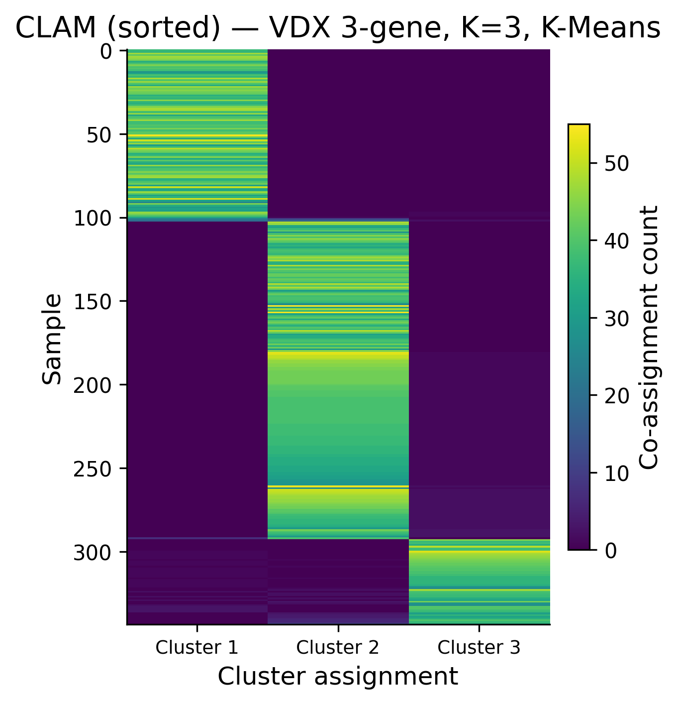
| Plot type | Sorted CLAM heatmap |
| Dataset | vdx_3gene — 344 samples, 3 features (ESR1, ERBB2, AURKA) |
| Method | K-Means (k-means++ init, n_init=50) |
| Parameters | K=3, B=200 iterations, 80/20 train-test split |
| X-axis | Cluster index (0, 1, 2) |
| Y-axis | Samples sorted by argmax(row), then by max(row)/sum(row) descending |
| Color | Assignment count (viridis, 0 to B=200) |
| Computation | CLAM[i,j] = # times sample i assigned to cluster j across B subsample iterations. Rows reordered so each cluster's most confident members appear as a contiguous block. |
| ERICA call | get_results()['clam_matrices'][(3, 'kmeans')] |
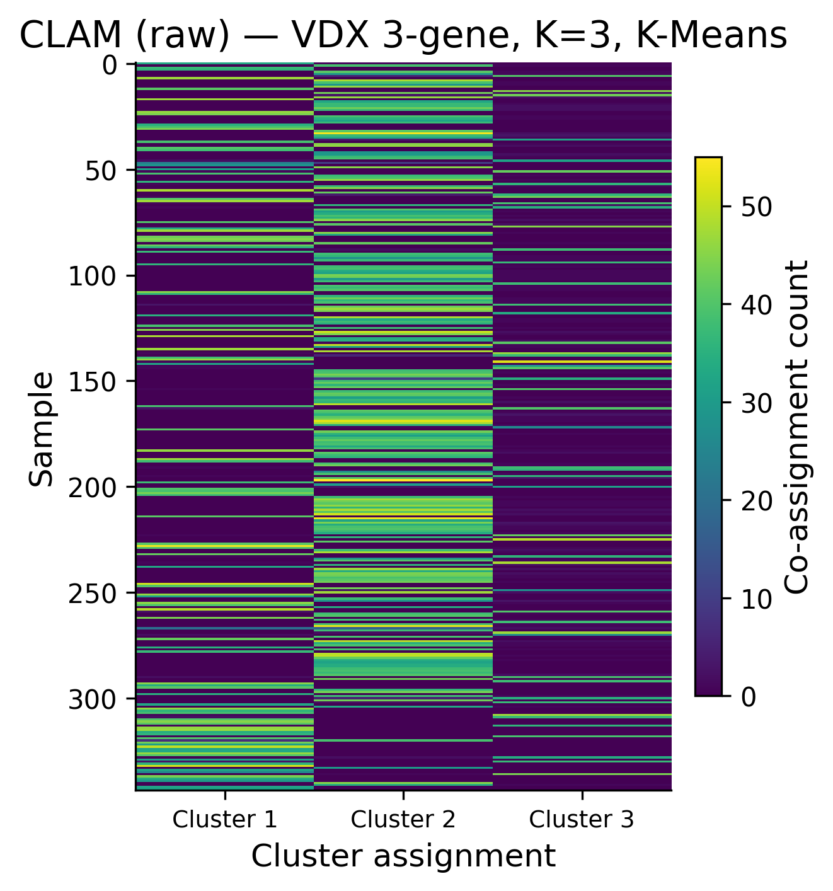
| Plot type | Unsorted CLAM heatmap |
| Dataset | vdx_3gene — 344 samples, 3 features (ESR1, ERBB2, AURKA) |
| Method | K-Means (k-means++ init, n_init=50) |
| Parameters | K=3, B=200 iterations, 80/20 train-test split |
| X-axis | Cluster index (0, 1, 2) |
| Y-axis | Samples in original dataset order (no sorting applied) |
| Color | Assignment count (viridis, 0 to B=200) |
| Computation | CLAM[i,j] = # times sample i assigned to cluster j across B iterations. No reordering; compare with Fig. 1a to see sorting benefit. |
| ERICA call | get_results()['clam_matrices'][(3, 'kmeans')] |
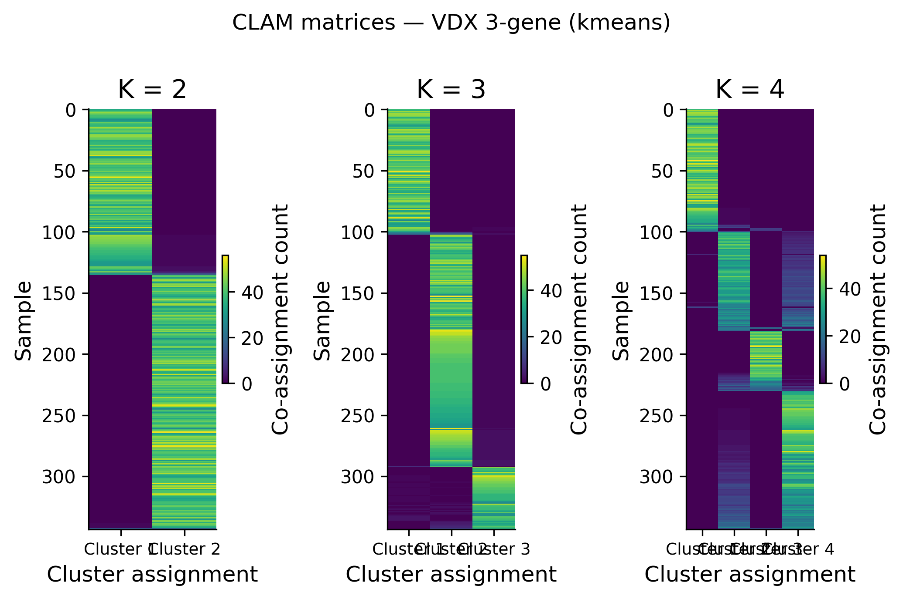
| Plot type | Sorted CLAM heatmap multi-panel (K progression) |
| Dataset | vdx_3gene — 344 samples, 3 features (ESR1, ERBB2, AURKA) |
| Method | K-Means (k-means++ init, n_init=50) |
| Parameters | K=2, 3, 4 (three panels); B=200 iterations, 80/20 split |
| X-axis | Cluster index (0..K-1) per panel |
| Y-axis | Samples sorted by primary cluster then confidence within each K |
| Color | Assignment count (viridis, 0 to B=200, shared scale) |
| Computation | Three independent CLAM matrices, one per K value. Row sorting applied independently to each panel. |
| ERICA call | get_results()['clam_matrices'][(k, 'kmeans')] for k in [2, 3, 4] |
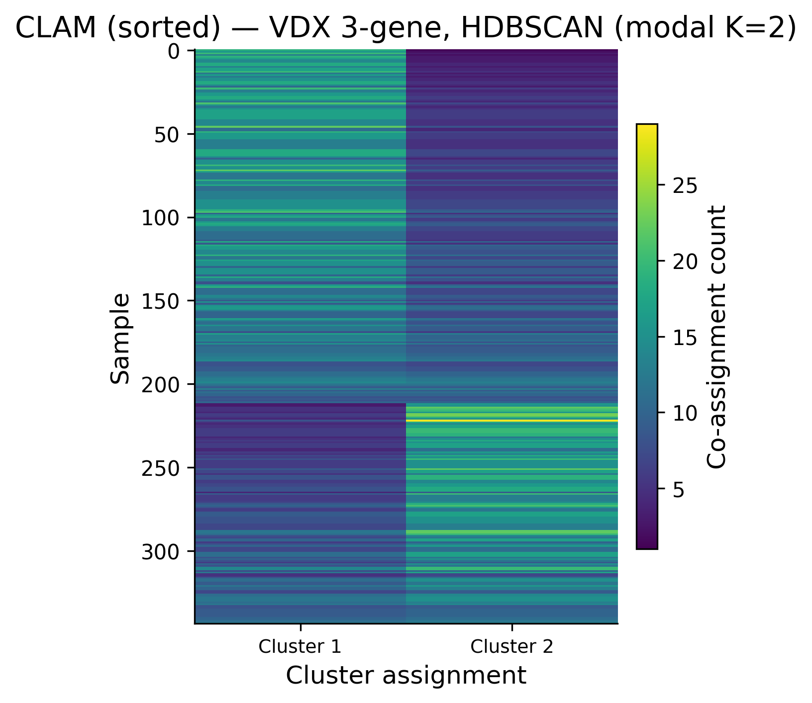
| Plot type | Sorted CLAM heatmap (HDBSCAN, auto-K) |
| Dataset | vdx_3gene — 344 samples, 3 features (ESR1, ERBB2, AURKA) |
| Method | HDBSCAN (min_cluster_size=15, min_samples=5) |
| Parameters | Modal K=2, B=200 iterations, 80/20 split |
| X-axis | Cluster index (0, 1) — modal K from HDBSCAN output |
| Y-axis | Samples sorted by primary cluster then confidence |
| Color | Assignment count (viridis, 0 to B=200) |
| Computation | CLAM accumulated only for iterations where HDBSCAN returned K=2. Noise points reassigned to nearest cluster centroid before tallying. |
| ERICA call | get_auto_k_results('hdbscan')['clam_matrix'] |
Note: HDBSCAN integration is experimental and under validation.
2. Sample Stability Profiles
CLAM rows turned into proportions and stacked sideways. Sorted by Shannon entropy because even our sorting has a theoretical basis. Stable samples (entropy ≈ 0) at top, ambiguous samples (entropy ≈ log2K) at bottom. Subsampled to 100 for display.
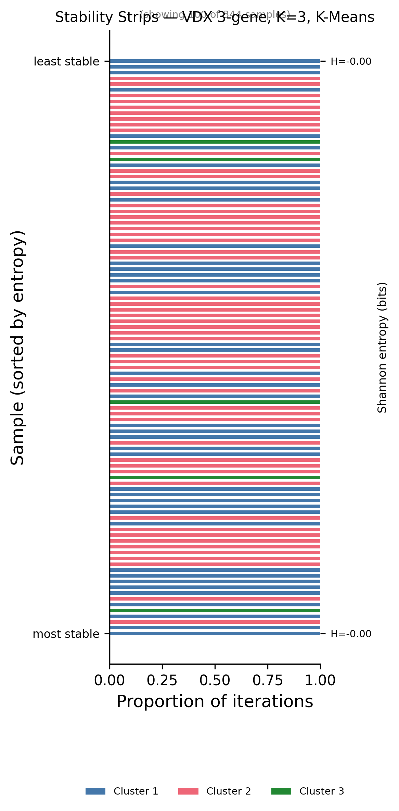
| Plot type | Entropy-sorted stacked bar chart (stability strip) |
| Dataset | vdx_3gene — 344 samples, 3 features (ESR1, ERBB2, AURKA) |
| Method | K-Means (k-means++ init, n_init=50) |
| Parameters | K=3, B=200 iterations, 80/20 split; subsampled to 100 for display |
| X-axis | Proportion of assignments to each cluster (0 to 1, sums to 1 per bar) |
| Y-axis | Individual samples sorted ascending by Shannon entropy H = −∑p·log₂(p) |
| Color | Cluster identity (qualitative palette, K=3 colors) |
| Computation | CLAM rows normalized to proportions p_ij = CLAM[i,j]/B. Shannon entropy computed per row. Samples sorted ascending so most stable (H≈0) appear at top. |
| ERICA call | get_results()['clam_matrices'][(3, 'kmeans')] / 200 |
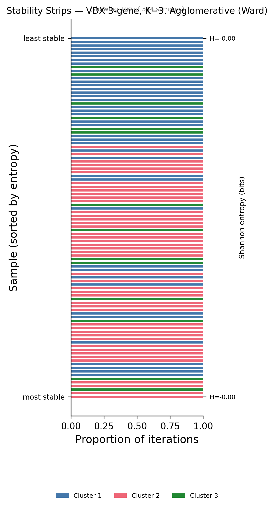
| Plot type | Entropy-sorted stacked bar chart (stability strip) |
| Dataset | vdx_3gene — 344 samples, 3 features (ESR1, ERBB2, AURKA) |
| Method | Agglomerative Clustering (Ward linkage, Euclidean) |
| Parameters | K=3, B=200 iterations, 80/20 split; subsampled to 100 for display |
| X-axis | Proportion of assignments to each cluster (0 to 1) |
| Y-axis | Individual samples sorted ascending by Shannon entropy H = −∑p·log₂(p) |
| Color | Cluster identity (qualitative palette, K=3 colors) |
| Computation | CLAM rows normalized to proportions. Entropy computed per row and used for sort order. Boundary samples (high entropy, mixed bars) appear at bottom. |
| ERICA call | get_results()['clam_matrices'][(3, 'agglomerative_ward')] / 200 |
3. Replicability Metric Curves
Left panels: the ERICA metrics (CRI, WCRI, TWCRI) vs K, with K* marked by hopeful little dashed lines. Right panels: ARI and AMI (mean ± std) across 200 iterations. Disqualified K values (empty clusters) marked with ×.
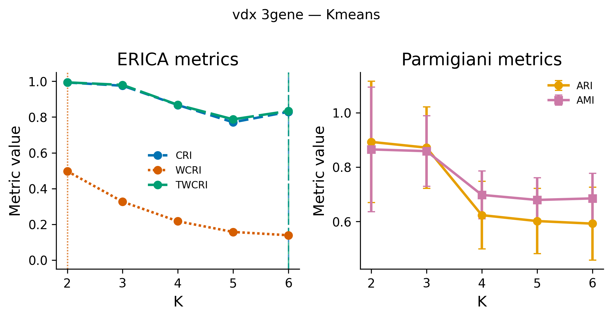
| Plot type | Stability profile with K* annotation (dual-panel) |
| Dataset | vdx_3gene — 344 samples, 3 features (ESR1, ERBB2, AURKA) |
| Method | K-Means (k-means++ init, n_init=50) |
| Parameters | K=2..6, B=200 iterations, 80/20 split |
| X-axis | K (number of clusters), both panels |
| Y-axis (L) | CRI, WCRI, TWCRI values (0–1); K* marked with vertical dashed line |
| Y-axis (R) | ARI and AMI mean ± std across B iterations (Parmigiani metrics) |
| Computation | CRI = mean pairwise cosine similarity of CLAM rows. WCRI = cluster-size-weighted CRI. TWCRI = test-weighted WCRI. ARI/AMI computed per iteration then averaged. K* = first K where TWCRI is non-decreasing (Algorithm 2). |
| ERICA call | get_results()['metrics'] ; get_results()['k_star']['TWCRI']['kmeans'] |
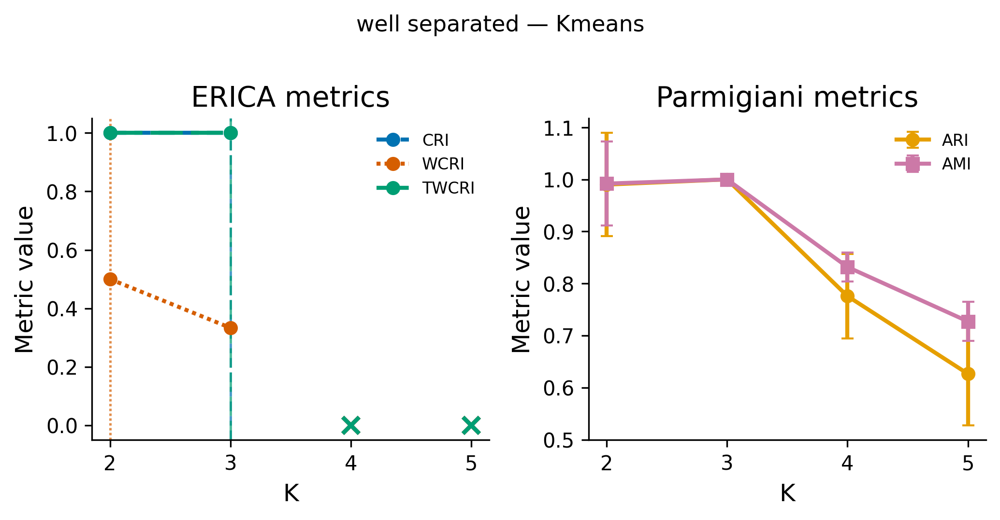
| Plot type | Stability profile with K* annotation (dual-panel) |
| Dataset | well_separated — 300 samples, 5 features (make_blobs, centers=3, std=0.8) |
| Method | K-Means (k-means++ init, n_init=50) |
| Parameters | K=2..6, B=200 iterations, 80/20 split; K=4,5 disqualified (empty clusters → NaN) |
| X-axis | K (number of clusters) |
| Y-axis (L) | CRI, WCRI, TWCRI (0–1); disqualified K marked with × |
| Y-axis (R) | ARI and AMI mean ± std across B iterations |
| Computation | Same as Fig. 3a. Disqualified K values (any empty cluster produced) set to NaN and excluded from K* selection. Literature standard: Tibshirani 2001, Masoero et al. 2023. |
| ERICA call | get_results()['metrics'] ; get_disqualified_k() |
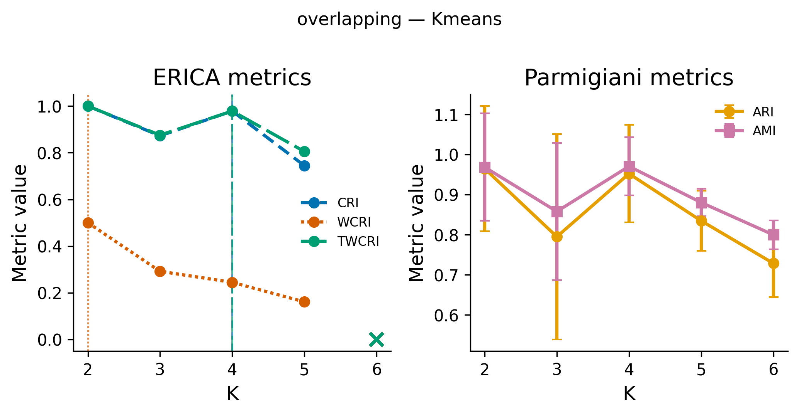
| Plot type | Stability profile with K* annotation (dual-panel) |
| Dataset | overlapping — 300 samples, 5 features (make_blobs, centers=4, std=2.0) |
| Method | K-Means (k-means++ init, n_init=50) |
| Parameters | K=2..6, B=200 iterations, 80/20 split |
| X-axis | K (number of clusters) |
| Y-axis (L) | CRI, WCRI, TWCRI (0–1) |
| Y-axis (R) | ARI and AMI mean ± std across B iterations; higher variance at true K due to overlapping boundaries |
| Computation | Same as Fig. 3a. Overlapping geometry (std=2.0) produces wider ARI/AMI confidence bands at the true K compared to well-separated data. |
| ERICA call | get_results()['metrics'] ; get_results()['k_star'] |
4. Method Comparison
Three algorithms look at the same data and politely disagree. K-based methods shown as lines; HDBSCAN as a marker at its modal K. Grouped bar charts show K* per method per metric.
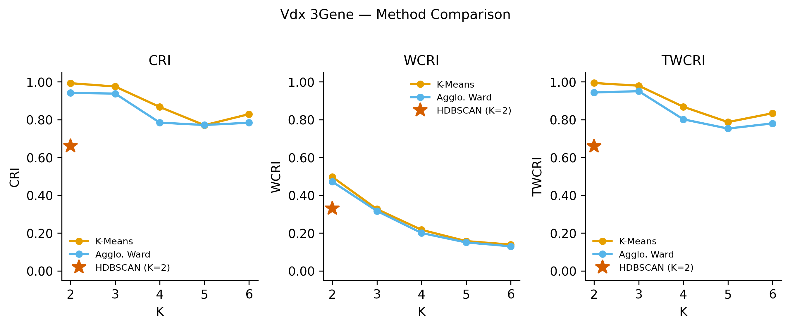
| Plot type | Multi-method metric overlay (line + marker) |
| Dataset | vdx_3gene — 344 samples, 3 features (ESR1, ERBB2, AURKA) |
| Method | K-Means, Agglomerative Ward, HDBSCAN (experimental) |
| Parameters | K=2..6 for K-based methods; modal K for HDBSCAN; B=200 iterations, 80/20 split |
| X-axis | K (number of clusters); HDBSCAN plotted as star at its modal K |
| Y-axis | ERICA metric value (CRI, WCRI, or TWCRI panel; 0–1) |
| Color | Method identity (orange=K-Means, blue=Ward, star=HDBSCAN) |
| Computation | CRI/WCRI/TWCRI computed per (K, method) pair. K* per method shown as vertical line in respective color. |
| ERICA call | get_results()['metrics'] for each method key |
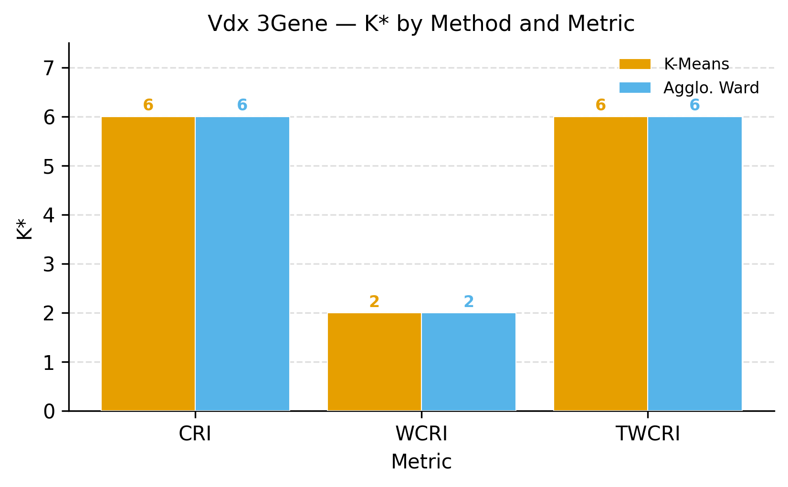
| Plot type | K* grouped bar chart |
| Dataset | vdx_3gene — 344 samples, 3 features (ESR1, ERBB2, AURKA) |
| Method | K-Means, Agglomerative Ward, Agglomerative Single, HDBSCAN (experimental) |
| Parameters | K=2..6 sweep; B=200 iterations, 80/20 split |
| X-axis | ERICA metric (CRI, WCRI, TWCRI) grouped by method |
| Y-axis | K* value (optimal number of clusters selected by Algorithm 2) |
| Color | Method identity (grouped bar fill color per method) |
| Computation | K* = smallest K where the metric is non-decreasing over the remaining tested K values. Disqualified K values (NaN) excluded from selection. |
| ERICA call | get_results()['k_star'] |
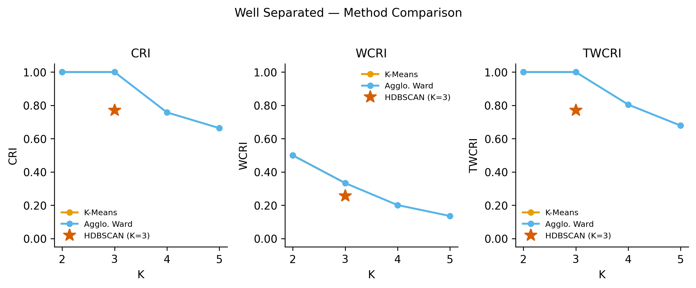
| Plot type | Multi-method metric overlay (line + marker) |
| Dataset | well_separated — 300 samples, 5 features (make_blobs, centers=3, std=0.8) |
| Method | K-Means, Agglomerative Ward, Agglomerative Single |
| Parameters | K=2..6, B=200 iterations, 80/20 split |
| X-axis | K (number of clusters, 2..6) |
| Y-axis | TWCRI value (0–1); K* per method shown as vertical line |
| Color | Method identity |
| Computation | TWCRI computed per (K, method). With well-separated data all methods agree K*=3=true K. |
| ERICA call | get_results()['metrics'] for each method key |
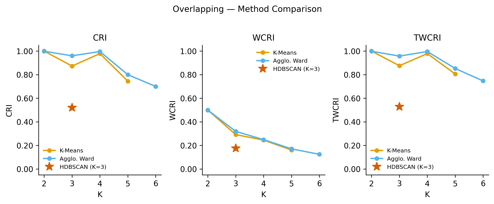
| Plot type | Multi-method metric overlay (line + marker) |
| Dataset | overlapping — 300 samples, 5 features (make_blobs, centers=4, std=2.0) |
| Method | K-Means, Agglomerative Ward, Agglomerative Single |
| Parameters | K=2..6, B=200 iterations, 80/20 split |
| X-axis | K (number of clusters, 2..6) |
| Y-axis | TWCRI value (0–1); K* per method shown as vertical line |
| Color | Method identity |
| Computation | TWCRI computed per (K, method). Overlapping geometry (std=2.0) causes method disagreement on K*; metric curves are less decisive. |
| ERICA call | get_results()['metrics'] for each method key |
5. Cluster Assignment Scatter Plots
For 2D datasets only (the rest of us are stuck in high-dimensional purgatory). Points colored by cluster assignment, sized by how confident ERICA is about that assignment. Big dot = "definitely this cluster." Small dot = "honestly could go either way."
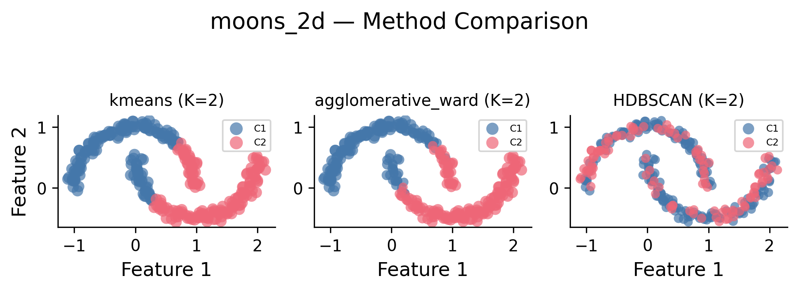
| Plot type | Cluster assignment scatter — method comparison panel |
| Dataset | moons_2d — 300 samples, 2 features (make_moons, noise=0.05) |
| Method | K-Means, Agglomerative Ward, HDBSCAN (side-by-side panels) |
| Parameters | K=2, B=200 iterations, 80/20 split |
| X-axis | Feature 1 (dim 0) |
| Y-axis | Feature 2 (dim 1) |
| Color | Primary cluster assignment argmax(CLAM[i,:]) — qualitative palette |
| Point size | CLAM confidence = max(CLAM[i,:])/B; larger = more stable assignment |
| Computation | Primary cluster from argmax of normalized CLAM row. Confidence from max proportion. Point area scales linearly with confidence. |
| ERICA call | get_results()['clam_matrices'][(2, method)] for each method |
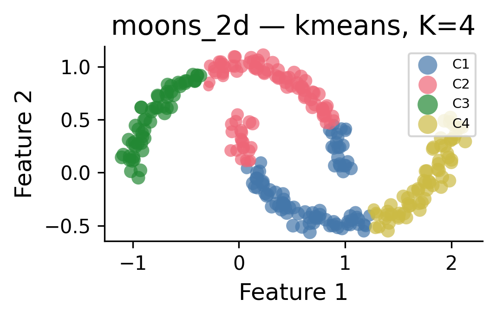
| Plot type | Cluster assignment scatter at K* |
| Dataset | moons_2d — 300 samples, 2 features (make_moons, noise=0.05) |
| Method | K-Means (k-means++ init, n_init=50) |
| Parameters | K=K*=4 (TWCRI-selected), B=200 iterations, 80/20 split |
| X-axis | Feature 1 (dim 0) |
| Y-axis | Feature 2 (dim 1) |
| Color | Primary cluster assignment (qualitative palette, K=4 colors) |
| Point size | CLAM confidence = max(CLAM[i,:])/B |
| Computation | K-Means cannot recover the crescent geometry; at K*=4 each moon is bisected into two roughly equal halves. |
| ERICA call | get_results()['clam_matrices'][(4, 'kmeans')] |
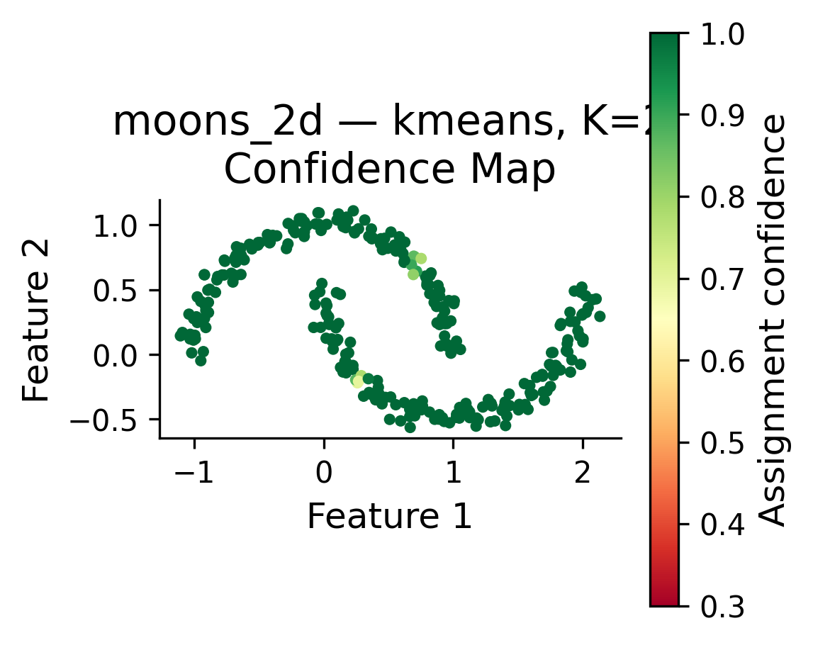
| Plot type | Confidence map scatter (continuous color scale) |
| Dataset | moons_2d — 300 samples, 2 features (make_moons, noise=0.05) |
| Method | K-Means (k-means++ init, n_init=50) |
| Parameters | K=2, B=200 iterations, 80/20 split |
| X-axis | Feature 1 (dim 0) |
| Y-axis | Feature 2 (dim 1) |
| Color | CLAM confidence = max(CLAM[i,:])/B (RdYlGn: red=low, green=high) |
| Computation | Per-sample confidence derived from max proportion in normalized CLAM row. Boundary zone between moons has low confidence (≈0.5) due to inconsistent assignments. |
| ERICA call | get_results()['clam_matrices'][(2, 'kmeans')] / 200 |
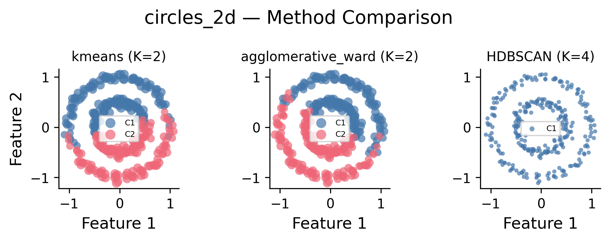
| Plot type | Cluster assignment scatter — method comparison panel |
| Dataset | circles_2d — 300 samples, 2 features (make_circles, noise=0.05, factor=0.5) |
| Method | K-Means, Agglomerative Ward, HDBSCAN (side-by-side panels) |
| Parameters | K=2, B=200 iterations, 80/20 split |
| X-axis | Feature 1 (dim 0) |
| Y-axis | Feature 2 (dim 1) |
| Color | Primary cluster assignment — qualitative palette |
| Point size | CLAM confidence = max(CLAM[i,:])/B |
| Computation | None of the tested methods can recover the radial circle geometry; all produce linear (spatial) bisections of the plane instead. |
| ERICA call | get_results()['clam_matrices'][(2, method)] for each method |
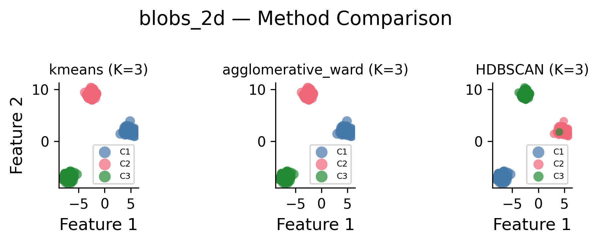
| Plot type | Cluster assignment scatter — method comparison panel |
| Dataset | blobs_2d — 300 samples, 2 features (make_blobs, centers=3, std=0.5) |
| Method | K-Means, Agglomerative Ward, Agglomerative Single (side-by-side panels) |
| Parameters | K=3=true K, B=200 iterations, 80/20 split |
| X-axis | Feature 1 (dim 0) |
| Y-axis | Feature 2 (dim 1) |
| Color | Primary cluster assignment — qualitative palette |
| Point size | CLAM confidence = max(CLAM[i,:])/B; near-maximum for all points |
| Computation | Well-separated blobs (std=0.5) yield CRI≈1.0 and identical assignments across all methods; all three panels are nearly equivalent. |
| ERICA call | get_results()['clam_matrices'][(3, method)] for each method |
6. K-Value Progression Series
The "watch the clusters subdivide" grid. 3 methods across, K=2 through 6 down. For 2D data you get scatter plots; for everything else, sorted CLAM heatmaps. Orange borders mark where ERICA thinks K* is. Asterisks mark the truth (when we know it). Click to enlarge and question our choices.
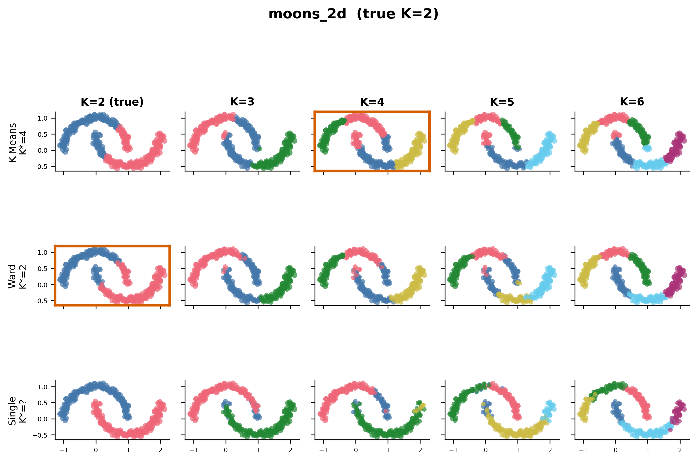
| Plot type | K-value progression grid (scatter panels) |
| Dataset | moons_2d — 300 samples, 2 features (make_moons, noise=0.05) |
| Method | K-Means, Agglomerative Ward, Agglomerative Single (3 rows) |
| Parameters | K=2..6 (5 columns), B=200 iterations, 80/20 split |
| Layout | 3 rows (methods) × 5 cols (K=2..6); orange border marks K* per method |
| Color | Primary cluster assignment (qualitative palette per K) |
| Point size | CLAM confidence = max(CLAM[i,:])/B |
| Computation | 15 independent CLAM matrices. K* computed via TWCRI Algorithm 2 and highlighted with orange border. |
| ERICA call | get_results()['clam_matrices'][(k, method)] for k in 2..6 |
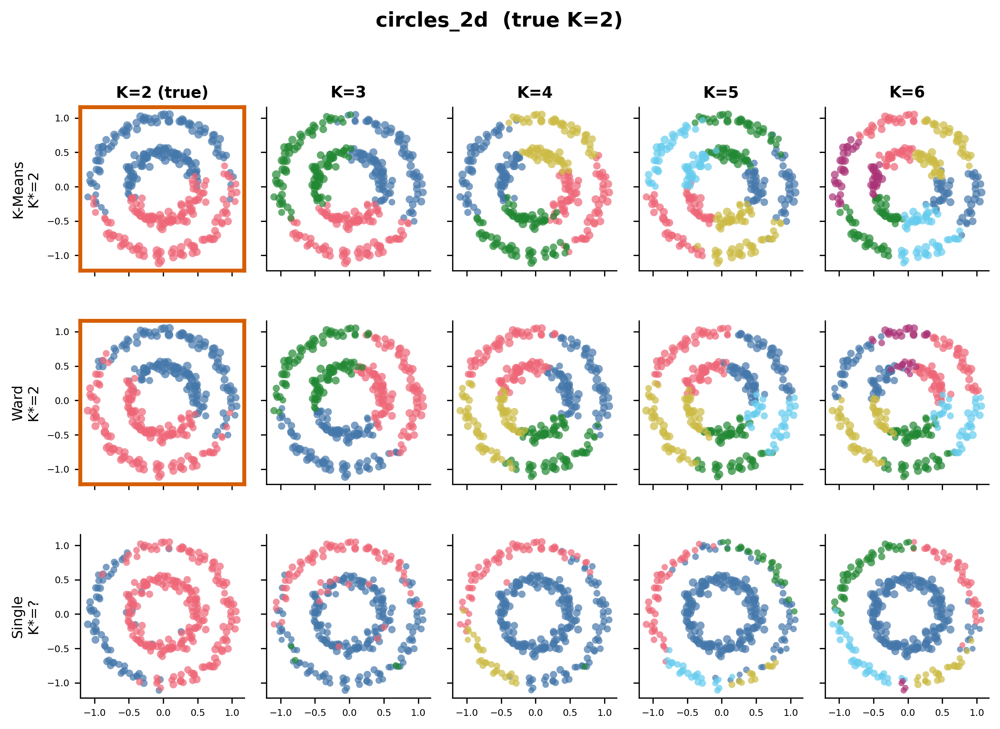
| Plot type | K-value progression grid (scatter panels) |
| Dataset | circles_2d — 300 samples, 2 features (make_circles, noise=0.05, factor=0.5) |
| Method | K-Means, Agglomerative Ward, Agglomerative Single (3 rows) |
| Parameters | K=2..6 (5 columns), B=200 iterations, 80/20 split |
| Layout | 3 rows (methods) × 5 cols (K=2..6); orange border marks K* per method |
| Color | Primary cluster assignment (qualitative palette per K) |
| Point size | CLAM confidence = max(CLAM[i,:])/B |
| Computation | 15 CLAM matrices. Concentric circles violate convexity assumption; no method recovers radial separation at any K. |
| ERICA call | get_results()['clam_matrices'][(k, method)] for k in 2..6 |
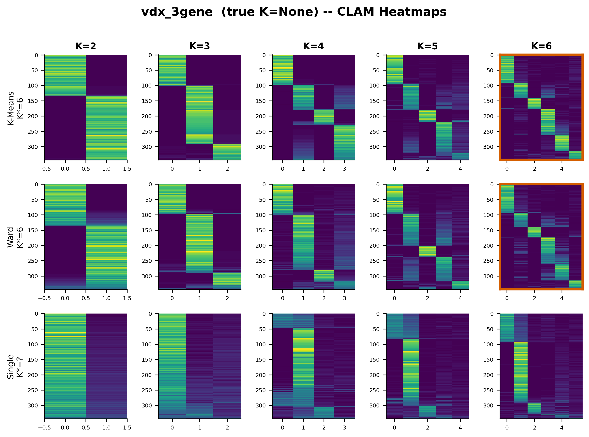
| Plot type | K-value progression grid (sorted CLAM heatmaps) |
| Dataset | vdx_3gene — 344 samples, 3 features (ESR1, ERBB2, AURKA) |
| Method | K-Means, Agglomerative Ward, Agglomerative Single (3 rows) |
| Parameters | K=2..6 (5 columns), B=200 iterations, 80/20 split |
| Layout | 3 rows (methods) × 5 cols (K=2..6); orange border marks K* per method |
| Color | Assignment count (viridis, 0 to B=200) per panel |
| Computation | CLAM heatmaps used (not scatter) as n_features=3 > 2. Each panel sorted by argmax row then confidence. True K unknown for this real dataset. |
| ERICA call | get_results()['clam_matrices'][(k, method)] for k in 2..6 |
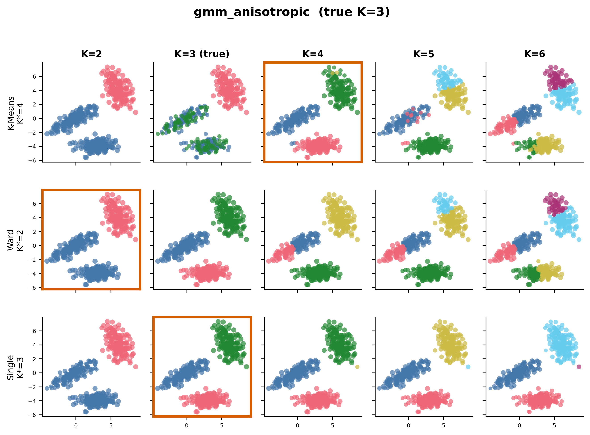
| Plot type | K-value progression grid (scatter panels) |
| Dataset | gmm_anisotropic — 450 samples, 2 features (3 elongated Gaussians, varied orientations) |
| Method | K-Means, Agglomerative Ward, Agglomerative Single (3 rows) |
| Parameters | K=2..6 (5 columns), B=200 iterations, 80/20 split |
| Layout | 3 rows (methods) × 5 cols (K=2..6); orange border marks K* per method |
| Color | Primary cluster assignment (qualitative palette per K) |
| Point size | CLAM confidence = max(CLAM[i,:])/B |
| Computation | Anisotropic geometry (elongated ellipses) challenges K-Means; Ward linkage typically recovers the true K=3 better. |
| ERICA call | get_results()['clam_matrices'][(k, method)] for k in 2..6 |
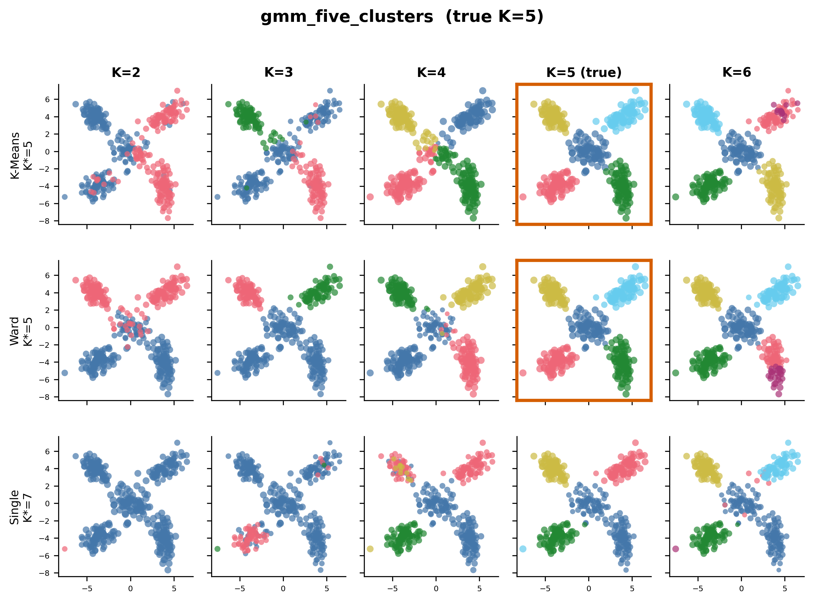
| Plot type | K-value progression grid (scatter panels) |
| Dataset | gmm_five_clusters — 400 samples, 2 features (5 Gaussians with varied covariances) |
| Method | K-Means, Agglomerative Ward, Agglomerative Single (3 rows) |
| Parameters | K=2..6 (5 columns), B=200 iterations, 80/20 split |
| Layout | 3 rows (methods) × 5 cols (K=2..6); orange border marks K* per method |
| Color | Primary cluster assignment (qualitative palette per K) |
| Point size | CLAM confidence = max(CLAM[i,:])/B |
| Computation | Five distinct clusters with varied covariances. K*=5 column should show cleanest block structure in CLAM if method recovers true structure. |
| ERICA call | get_results()['clam_matrices'][(k, method)] for k in 2..6 |
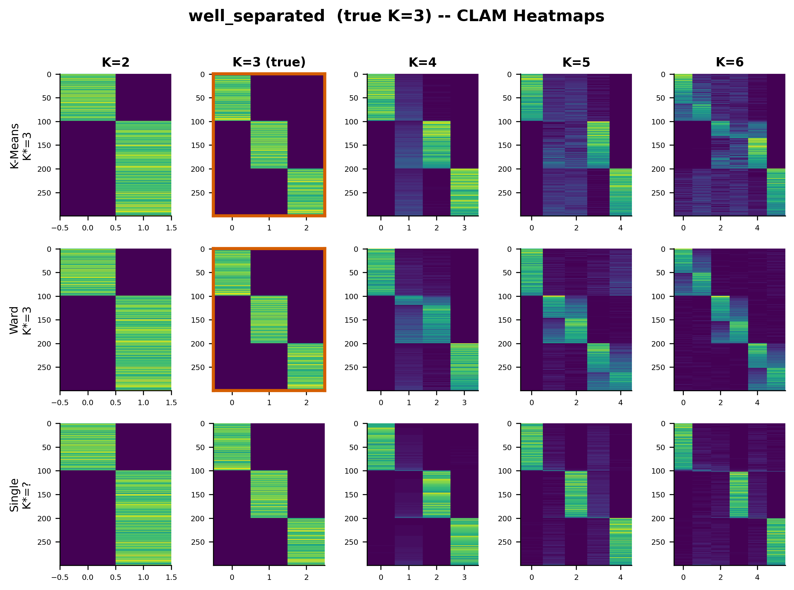
| Plot type | K-value progression grid (sorted CLAM heatmaps) |
| Dataset | well_separated — 300 samples, 5 features (make_blobs, centers=3, std=0.8) |
| Method | K-Means, Agglomerative Ward, Agglomerative Single (3 rows) |
| Parameters | K=2..6 (5 columns), B=200 iterations, 80/20 split |
| Layout | 3 rows (methods) × 5 cols (K=2..6); orange border marks K* per method |
| Color | Assignment count (viridis, 0 to B=200) per panel |
| Computation | CLAM heatmaps (n_features=5 > 2). At K=3 all methods show perfect block structure (TWCRI=1.0). K>3 columns show off-diagonal smearing. |
| ERICA call | get_results()['clam_matrices'][(k, method)] for k in 2..6 |
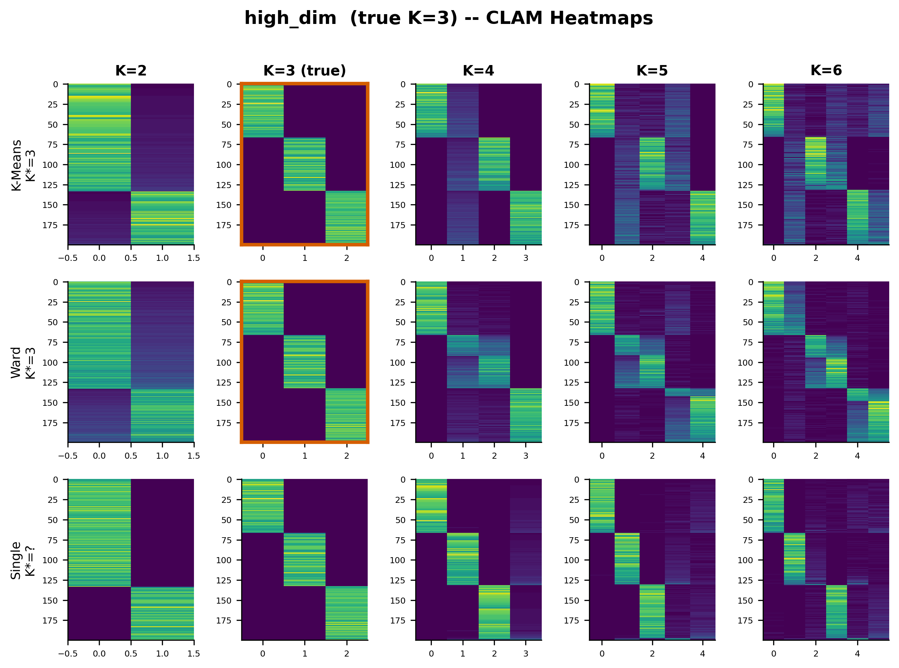
| Plot type | K-value progression grid (sorted CLAM heatmaps) |
| Dataset | high_dim — 200 samples, 50 features (make_blobs, centers=3) |
| Method | K-Means, Agglomerative Ward, Agglomerative Single (3 rows) |
| Parameters | K=2..6 (5 columns), B=200 iterations, 80/20 split |
| Layout | 3 rows (methods) × 5 cols (K=2..6); orange border marks K* per method |
| Color | Assignment count (viridis, 0 to B=200) per panel |
| Computation | High-dimensional (50D) case; CLAM heatmaps render well even in 50D. Curse of dimensionality may reduce block contrast vs 2D datasets. |
| ERICA call | get_results()['clam_matrices'][(k, method)] for k in 2..6 |
7. 3D Surfaces & Parameter Sensitivity
We made the plots three-dimensional because we could. The 2D heatmaps probably contain the same information with fewer rotating-axis headaches, but the 3D ones are more fun at lab meetings.
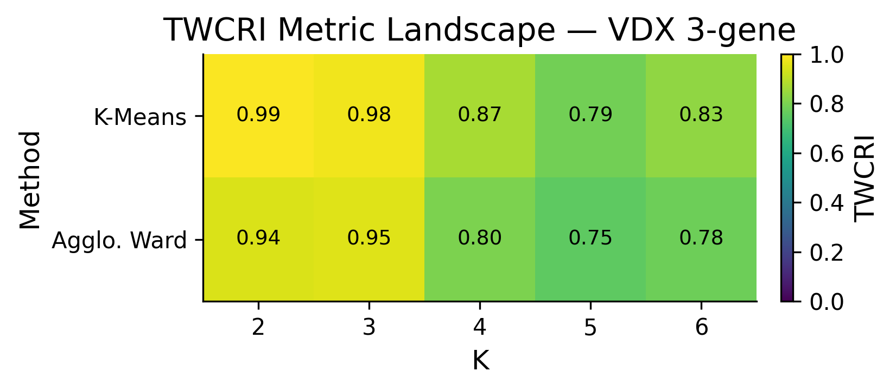
| Plot type | 2D annotated heatmap (parameter sensitivity grid) |
| Dataset | vdx_3gene — 344 samples, 3 features (ESR1, ERBB2, AURKA) |
| Method | K-Means, Agglomerative Ward, Agglomerative Single (rows) |
| Parameters | K=2..6 (columns), B=200 iterations, 80/20 split |
| X-axis | K value (2, 3, 4, 5, 6) |
| Y-axis | Clustering method |
| Color | TWCRI value (sequential colormap, 0–1); cell text shows numeric value |
| Computation | TWCRI[method, K] from independent ERICA runs. Highest-valued cell per row indicates that method's K*. |
| ERICA call | get_results()['metrics'][k][method]['TWCRI'] for all (k, method) |
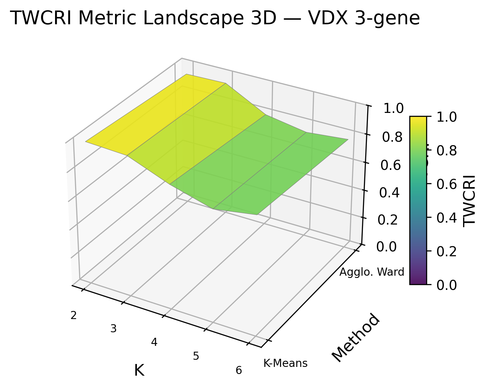
| Plot type | 3D surface plot |
| Dataset | vdx_3gene — 344 samples, 3 features (ESR1, ERBB2, AURKA) |
| Method | K-Means, Agglomerative Ward, Agglomerative Single |
| Parameters | K=2..6, B=200 iterations, 80/20 split |
| X-axis | K value (2..6) |
| Y-axis | Clustering method (categorical, encoded as 0/1/2) |
| Z-axis | TWCRI value (0–1) |
| Color | Z height (TWCRI), same sequential palette as Fig. 7a |
| Computation | Same TWCRI matrix as Fig. 7a, rendered as 3D surface to expose relative magnitude across the full (method, K) grid. |
| ERICA call | get_results()['metrics'][k][method]['TWCRI'] for all (k, method) |
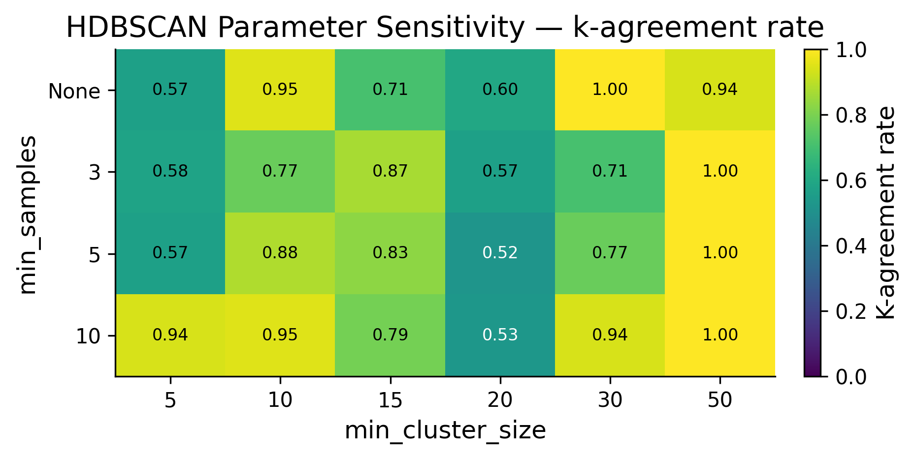
| Plot type | 2D parameter sensitivity heatmap (HDBSCAN hyperparameter sweep) |
| Dataset | vdx_3gene — 344 samples, 3 features (ESR1, ERBB2, AURKA) |
| Method | HDBSCAN (experimental) |
| Parameters | min_cluster_size ∈ {5,10,15,20,30,50} × min_samples ∈ {None,3,5,10}; 24 runs × 100 iterations each |
| X-axis | min_cluster_size (6 values: 5..50) |
| Y-axis | min_samples (4 values: None, 3, 5, 10) |
| Color | K agreement rate = fraction of iterations where HDBSCAN returned the modal K (0–1) |
| Computation | For each hyperparameter pair, run ERICA for 100 iterations and record the fraction agreeing on modal K. Higher = more stable K discovery. |
| ERICA call | get_auto_k_results('hdbscan')['k_agreement'] per (min_cluster_size, min_samples) |
Note: HDBSCAN integration is experimental and under validation.
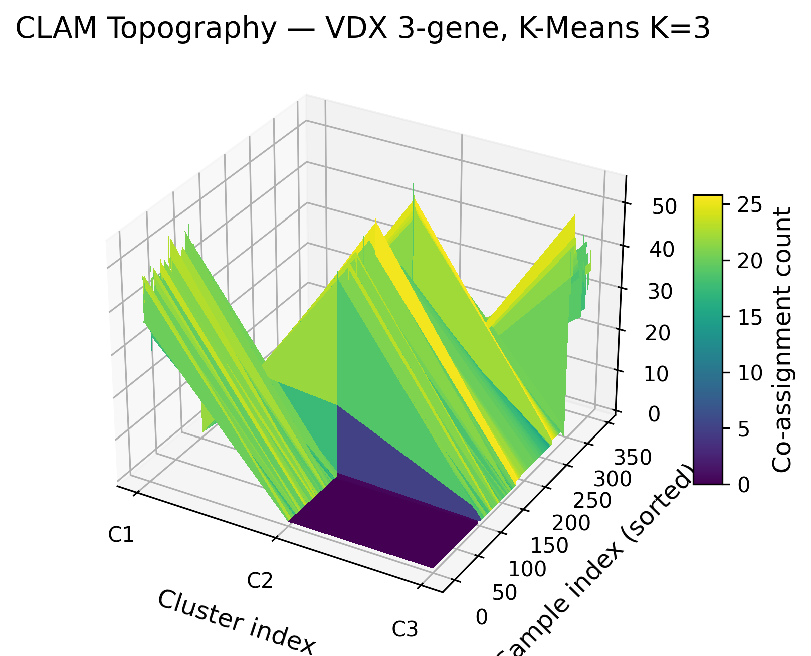
| Plot type | 3D surface (CLAM topography) |
| Dataset | vdx_3gene — 344 samples, 3 features (ESR1, ERBB2, AURKA) |
| Method | K-Means (k-means++ init, n_init=50) |
| Parameters | K=3, B=200 iterations, 80/20 split |
| X-axis | Cluster index (0, 1, 2) |
| Y-axis | Sample index (sorted by argmax then confidence, same order as Fig. 1a) |
| Z-axis | Assignment count CLAM[i,j] (0 to B=200) |
| Color | Z height (assignment count), viridis |
| Computation | The sorted CLAM matrix from Fig. 1a rendered as a 3D surface to emphasize the peaked structure of confident samples vs. the flat plateau of ambiguous ones. |
| ERICA call | get_results()['clam_matrices'][(3, 'kmeans')] |
8. Gaussian Mixture Sigma Study
4 Gaussian centers in 50 dimensions (because we wanted to suffer slightly less than at 100), 100 samples per center. Centers separated by 9.49 (Euclidean) in the first 10 dimensions. Standard deviation σ swept from 0.01 to 10.0, yielding radius/spacing ratios from 0.01 (trivially separated) to 7.45 (indistinguishable). K=2..6 tested with all four methods.
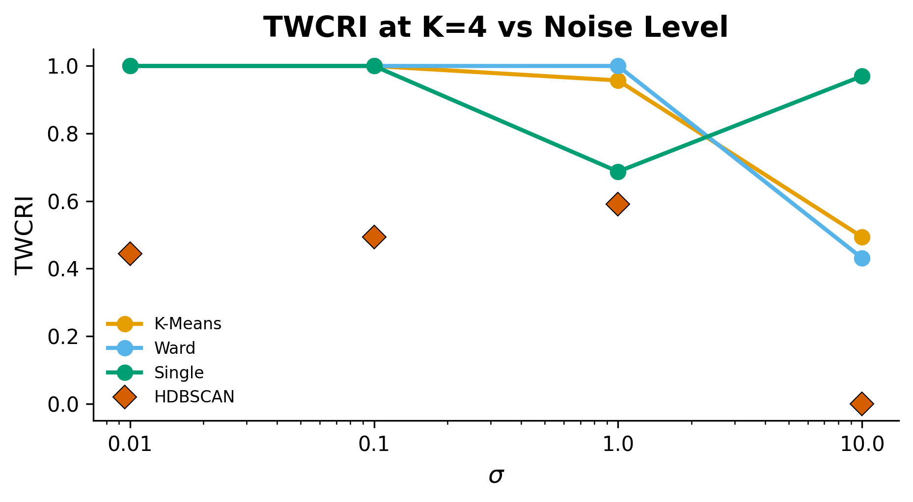
| Plot type | Sigma sweep line plot (stability vs. cluster separation) |
| Dataset | gauss4c_sigma* — 400 samples (100/center), 50 features, 4 centers; σ ∈ {0.01, 0.1, 1.0, 10.0} |
| Method | K-Means, Agglomerative Ward, Agglomerative Single (lines); HDBSCAN (markers) |
| Parameters | K=4 (true K) fixed; B=200 iterations, 80/20 split |
| X-axis | σ (log scale: 0.01 → 10.0); radius/spacing ratio in parentheses |
| Y-axis | TWCRI at K=4 (0–1) |
| Color | Method identity |
| Computation | For each σ level, run full ERICA and read TWCRI at K=true K=4. HDBSCAN plotted at its modal K's TWCRI as discrete marker. |
| ERICA call | get_results()['metrics'][4][method]['TWCRI'] per σ dataset |
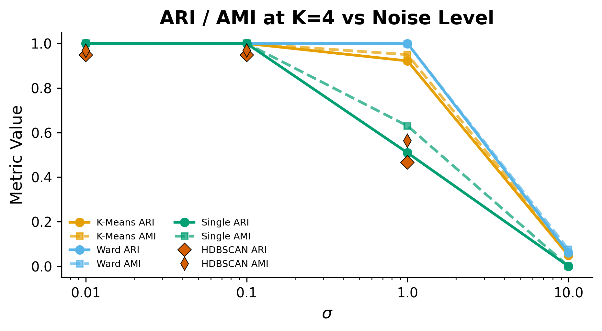
| Plot type | Sigma sweep line plot (Parmigiani metrics) |
| Dataset | gauss4c_sigma* — 400 samples, 50 features, 4 centers; σ ∈ {0.01, 0.1, 1.0, 10.0} |
| Method | K-Means, Agglomerative Ward, Agglomerative Single |
| Parameters | K=4 (true K), B=200 iterations, 80/20 split |
| X-axis | σ (log scale) |
| Y-axis | ARI mean ± std (solid) and AMI mean ± std (dashed) across B iterations at K=4 |
| Color | Method identity; line style distinguishes ARI vs AMI |
| Computation | ARI and AMI computed per iteration between clustering output and true labels, then averaged. Error bars = ± 1 std. Complements TWCRI in Fig. 8a. |
| ERICA call | get_results()['parmigiani_metrics'][4][method]['ARI_mean'] etc. |
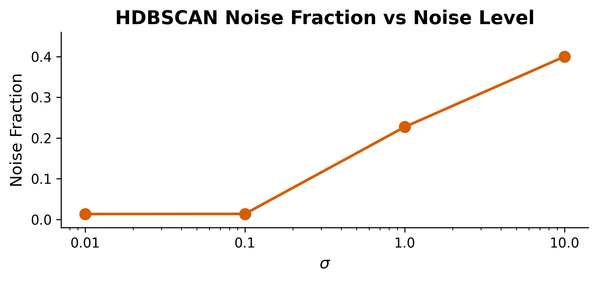
| Plot type | Sigma sweep bar/line (HDBSCAN noise diagnostic) |
| Dataset | gauss4c_sigma* — 400 samples, 50 features, 4 centers; σ ∈ {0.01, 0.1, 1.0, 10.0} |
| Method | HDBSCAN (experimental) |
| Parameters | min_cluster_size=15, min_samples=5; B=200 iterations, 80/20 split |
| X-axis | σ (log scale) |
| Y-axis | Mean fraction of test samples labeled as noise (label=-1) by HDBSCAN (0–1) |
| Color | Single series (HDBSCAN only) |
| Computation | For each iteration, count noise-labeled test points / total test points. Average across 200 iterations. As σ increases clusters merge and noise fraction rises dramatically. |
| ERICA call | get_auto_k_results('hdbscan')['noise_fraction'] per σ dataset |
Note: HDBSCAN integration is experimental and under validation.
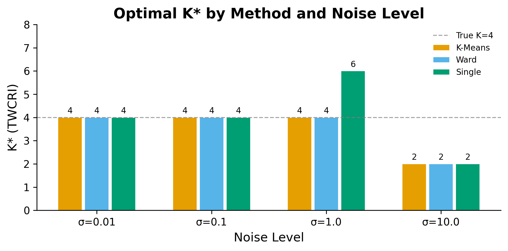
| Plot type | K* grouped bar chart across sigma levels |
| Dataset | gauss4c_sigma* — 400 samples, 50 features, 4 centers; σ ∈ {0.01, 0.1, 1.0, 10.0} |
| Method | K-Means, Agglomerative Ward, Agglomerative Single, HDBSCAN (experimental) |
| Parameters | K=2..6 sweep, B=200 iterations, 80/20 split |
| X-axis | σ level (four groups) |
| Y-axis | K* selected by TWCRI Algorithm 2 per method |
| Color | Method identity (grouped bars within each σ) |
| Reference | Horizontal dashed line at true K=4 |
| Computation | K* = smallest non-decreasing TWCRI index per method. As σ → 10 (structure collapses), methods disagree and K* deviates from true K=4. |
| ERICA call | get_results()['k_star']['TWCRI'] per σ dataset |
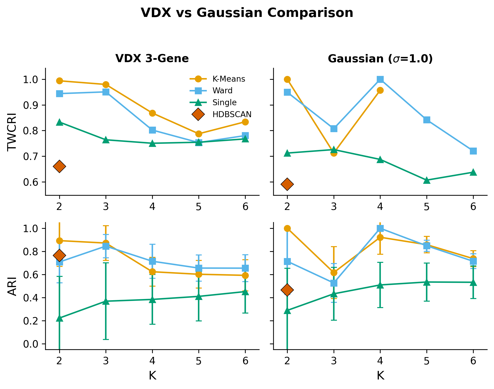
| Plot type | Dual-dataset metric comparison panel |
| Dataset (L) | vdx_3gene — 344 samples, 3 features (ESR1, ERBB2, AURKA) |
| Dataset (R) | gauss4c_sigma1p0 — 400 samples, 50 features, σ=1.0, radius/spacing=0.75 |
| Method | K-Means, Agglomerative Ward (shown in both panels) |
| Parameters | K=2..6, B=200 iterations, 80/20 split |
| X-axis | K (both panels) |
| Y-axis | TWCRI (top row) and ARI mean ± std (bottom row) |
| Color | Method identity (shared color scheme across panels) |
| Computation | Side-by-side to contrast real genomic data (VDX) with a synthetic analog of similar separation difficulty (σ=1.0 gives radius/spacing=0.75). |
| ERICA call | get_results()['metrics'] for each dataset independently |
K Progression by Sigma Level
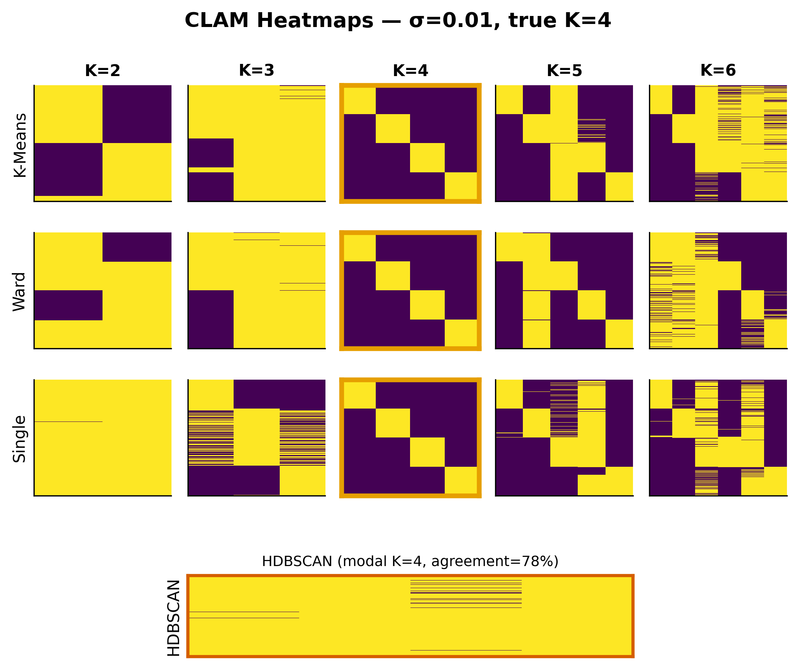
| Plot type | K-value progression grid (sorted CLAM heatmaps) |
| Dataset | gauss4c_sigma0p01 — 400 samples, 50 features, σ=0.01, radius/spacing=0.01, 4 centers |
| Method | K-Means, Agglomerative Ward, Agglomerative Single (3 rows) |
| Parameters | K=2..6 (5 columns), B=200 iterations, 80/20 split |
| Layout | 3 rows (methods) × 5 cols (K=2..6); orange border marks K* per method |
| Color | Assignment count (viridis, 0 to B=200) |
| Computation | Trivially separated (σ=0.01 << inter-center distance). All methods find perfect block structure at K=4; CLAM at K=4 is a pure identity-block matrix (TWCRI=1.0). |
| ERICA call | get_results()['clam_matrices'][(k, method)] for k in 2..6 |
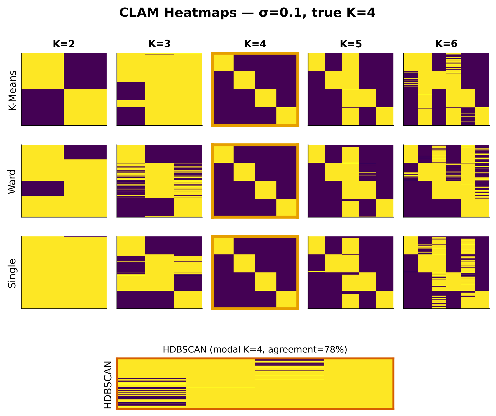
| Plot type | K-value progression grid (sorted CLAM heatmaps) |
| Dataset | gauss4c_sigma0p1 — 400 samples, 50 features, σ=0.1, radius/spacing=0.07, 4 centers |
| Method | K-Means, Agglomerative Ward, Agglomerative Single (3 rows) |
| Parameters | K=2..6 (5 columns), B=200 iterations, 80/20 split |
| Layout | 3 rows (methods) × 5 cols (K=2..6); orange border marks K* per method |
| Color | Assignment count (viridis, 0 to B=200) |
| Computation | Well-separated (σ/spacing=0.07). Still very high stability; CLAM at K=4 shows near-perfect blocks. Minor off-diagonal activity visible at K=5,6. |
| ERICA call | get_results()['clam_matrices'][(k, method)] for k in 2..6 |
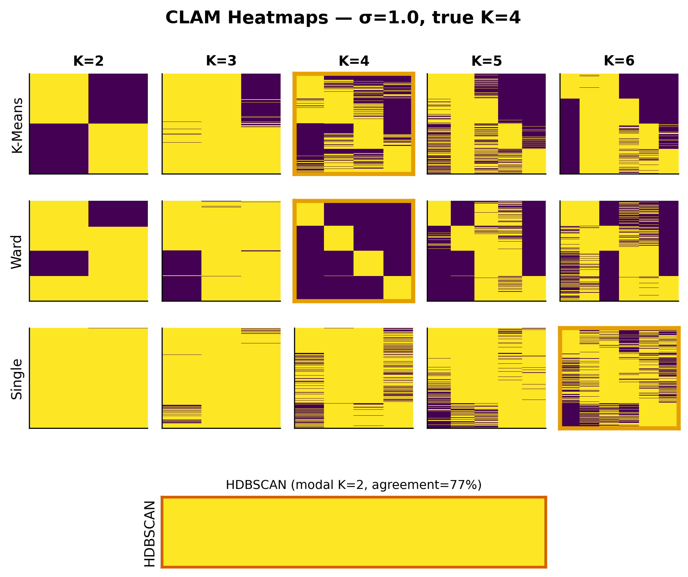
| Plot type | K-value progression grid (sorted CLAM heatmaps) |
| Dataset | gauss4c_sigma1p0 — 400 samples, 50 features, σ=1.0, radius/spacing=0.75, 4 centers |
| Method | K-Means, Agglomerative Ward, Agglomerative Single (3 rows) |
| Parameters | K=2..6 (5 columns), B=200 iterations, 80/20 split |
| Layout | 3 rows (methods) × 5 cols (K=2..6); orange border marks K* per method |
| Color | Assignment count (viridis, 0 to B=200) |
| Computation | Overlap region (σ/spacing=0.75). Block structure visible at K=4 but with notable off-diagonal counts. Methods begin to disagree on K*. Matches VDX difficulty level (see Fig. 8e). |
| ERICA call | get_results()['clam_matrices'][(k, method)] for k in 2..6 |
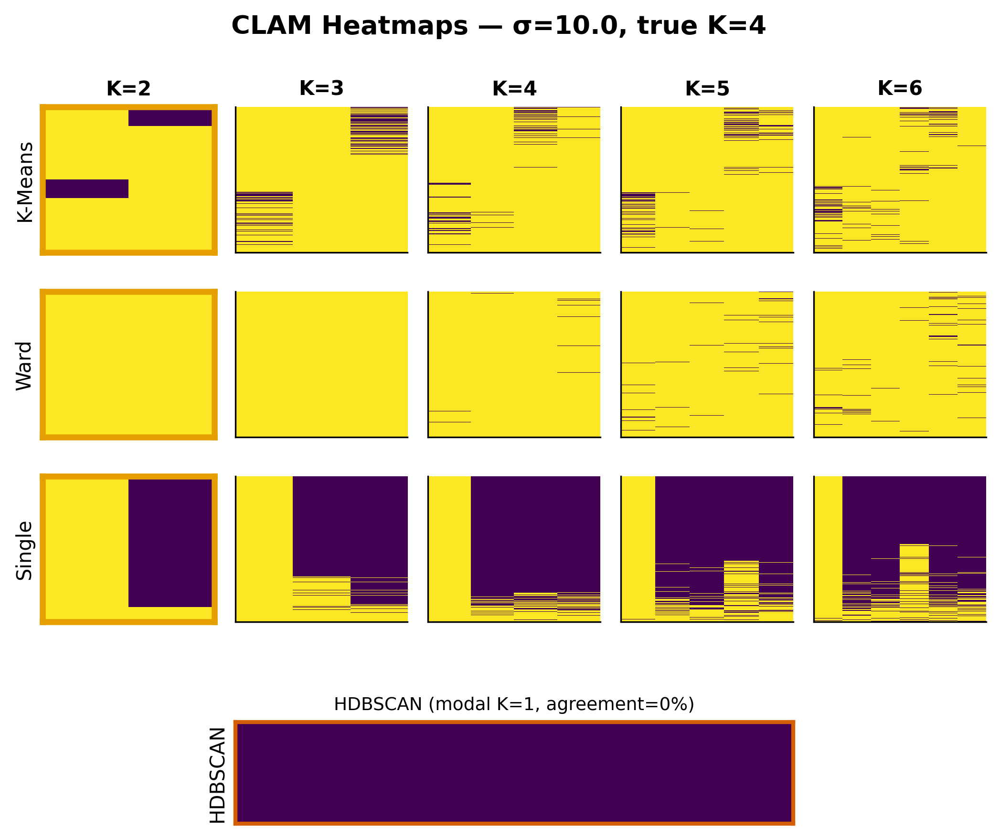
| Plot type | K-value progression grid (sorted CLAM heatmaps) |
| Dataset | gauss4c_sigma10p0 — 400 samples, 50 features, σ=10.0, radius/spacing=7.45, 4 centers |
| Method | K-Means, Agglomerative Ward, Agglomerative Single (3 rows) |
| Parameters | K=2..6 (5 columns), B=200 iterations, 80/20 split |
| Layout | 3 rows (methods) × 5 cols (K=2..6); orange border marks K* per method |
| Color | Assignment count (viridis, 0 to B=200) |
| Computation | Structure fully collapsed (σ >> inter-center spacing). CLAM matrices at all K show near-uniform noise — no block structure. TWCRI is low across all K; K* selection is meaningless at this level. |
| ERICA call | get_results()['clam_matrices'][(k, method)] for k in 2..6 |